Manual do vendedor
Integra Vendas no WhatsApp
Versão da extensão 0.23.1Revisado em 26/09/2026
Este manual ensina, passo a passo, a usar o painel do Integra Vendas que aparece do lado direito do WhatsApp Web: entrar no sistema, atender o cliente, cotar a lista que ele mandou, montar o orçamento, tirar o pedido e acompanhar cada cliente até a venda.
Todas as telas foram tiradas de um ambiente de demonstração. Os clientes, produtos e preços são de exemplo.
Regra de ouro: o painel prepara, você decide. Nenhuma mensagem é enviada, nenhum orçamento é salvo e nenhum pedido é finalizado sem o seu clique.
Comece aquiComece por aqui: guia rápido do vendedor
Esta parte é para ler no primeiro dia, em 15 minutos. Ela mostra o que a extensão muda no seu atendimento, o caminho de uma venda do começo ao fim, os hábitos que mais dão resultado e uma cola de bolso para consultar no balcão. Os detalhes de cada tela estão nas partes 1 a 5.
O que muda no seu dia
| Antes | Com a extensão |
|---|---|
| Copiar a lista do cliente e procurar peça por peça no sistema. | Cotar: um clique na mensagem e o painel procura todas as peças da lista de uma vez. |
| Digitar o orçamento à mão no WhatsApp. | Enviar no chat: o texto do orçamento pronto, com total e condição, cai na caixa de mensagem. |
| Abrir o sistema em outra janela para tirar o pedido. | Finalizar pedido direto do painel, com as regras da empresa conferidas antes. |
| Esquecer de cobrar o orçamento que ficou parado. | Retornos automáticos em 2 horas, 1, 3 e 7 dias, com mensagem pronta. |
| Perder tempo achando o cliente no cadastro. | Busca de cliente sem acento, com erro de digitação e com quem já comprou no topo. |
| Lembrar de cabeça quem está esperando. | Aba Hoje e o filtro Precisa de você mostram quem chamar agora. |
Seu primeiro dia em 15 minutos
- Instale ou confira a instalação (parte 1, Instalar no Chrome). Veja no cartão da extensão se a versão é a 0.23.0 ou mais nova.
- Entre com o seu e-mail e senha do Integra Vendas (Entrar no Integra Vendas). A bolinha do cabeçalho fica verde.
- Preencha a loja na aba Ajustes: nome da loja, seu nome e a chave Pix (A aba Ajustes). Eles entram nos textos que o painel escreve.
- Fixe o ícone da extensão no Chrome (quebra-cabeça → alfinete). O número vermelho nele mostra retornos vencidos.
- Treine com você mesmo: abra a conversa com o seu próprio número ("você") e mande para si uma lista, por exemplo "2 kit relacao cg 160" e "1 pastilha freio bros". Clique em Cotar e veja o painel trabalhar. Não finalize nada nesse treino.
- Vincule 3 clientes reais das conversas de hoje (Ligar a conversa ao cliente). Depois disso, o painel já reconhece esses WhatsApps.
- Abra a aba Hoje e veja quem está esperando (A aba Hoje).
O caminho de uma venda
Toda venda pelo WhatsApp passa pelas mesmas estações. Em cada uma, a extensão tem um botão que faz o trabalho pesado:
- 1. Cliente chamaAbra a conversa. O painel mostra quem é e o que ele já comprou.
- 2. VincularSe o cliente não aparece, busque pelo nome e clique em Vincular.
- 3. CotarPasse o mouse na lista dele e clique em Cotar. Confira e ponha no orçamento.
- 4. Enviar no chatO orçamento vai para a caixa de mensagem. Você revisa e aperta Enter.
- 5. Já envieiEtapa vira Orçamento enviado e os retornos são agendados.
- 6. CobrarA aba Hoje avisa quando cobrar, com a mensagem pronta.
- 7. Finalizar pedidoCliente fechou: confira pagamento e frete e finalize.
- 8. Pós-vendaAvise que está pronto, confirme a entrega e cuide da próxima troca de óleo.
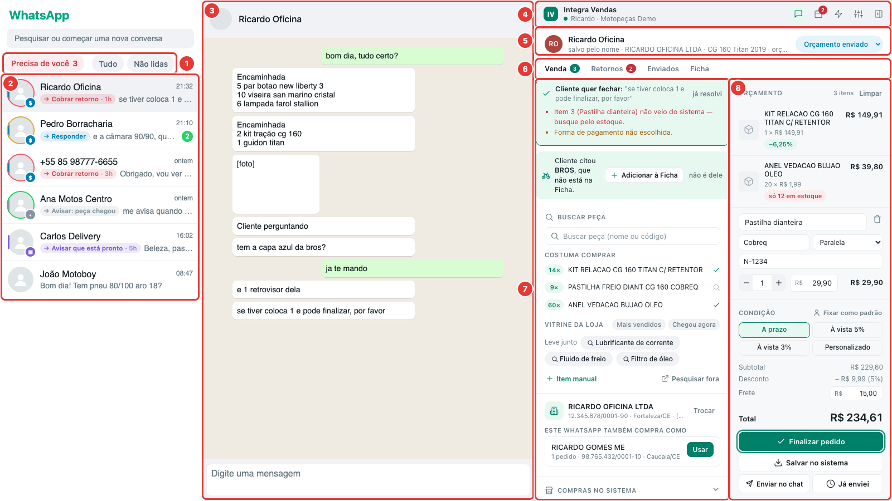
12 hábitos que fazem a diferença
- Vincule o cliente logo na primeira mensagem. Sem cliente vinculado não sai pedido, e o preço especial dele não aparece.
- Use Cotar em vez de digitar. A lista do cliente já vira busca. Se ele mandou várias mensagens seguidas, o Cotar junta todas.
- Confira as etiquetas da Cotar lista. confere (verde) está certo; confira (amarela), duvidoso e não achei (vermelhas) merecem uma olhada antes de pôr no orçamento.
- Sempre clique em Já enviei depois de mandar o orçamento. É ele que agenda as cobranças. Sem ele, o orçamento cai no esquecimento.
- Mude a etapa quando a venda andar. Aguardando Pix, Pago, Separando: cada etapa muda o lembrete certo na lista de conversas.
- Comece o dia pela aba Hoje e ligue o filtro Precisa de você nos intervalos. Quem espera há mais tempo aparece primeiro.
- Anote a moto na Ficha. Com a moto, a busca prioriza as peças dela e a aba Hoje avisa a troca de óleo.
- Marque o motivo quando perder. "Preço", "Sem estoque", "Comprou em outro lugar": é assim que a loja descobre o que ajustar.
- Peça em falta? Use o sino. A peça entra na lista de espera e a aba Hoje avisa quando chegar ao estoque.
- Arraste a foto da peça para a conversa. Cliente que vê a peça decide mais rápido, e a legenda já vai com o preço.
- Use as Respostas prontas para o que você escreve todo dia: Pix, horário, "pronto pra retirar".
- Faça Exportar backup na aba Ajustes uma vez por semana. Fichas e retornos ficam só neste Chrome.
Cola de bolso
Imprima esta página e deixe perto do teclado.
| Eu quero… | Faço assim |
|---|---|
| Achar o cliente no sistema | Trocar no cartão do cliente → digite nome, cidade, CNPJ ou telefone → Enter. |
| Cotar a lista que o cliente mandou | Mouse em cima da mensagem dele → botão verde Cotar. |
| Cotar um pedaço do texto | Selecione o texto na conversa → Cotar que aparece ao lado. |
| Buscar uma peça | Campo Buscar peça → 3 letras ou o código → Enter põe a primeira no orçamento. |
| Mandar só o preço de uma peça | Aviãozinho na linha da peça, ou Ctrl+Enter. |
| Mandar a foto da peça | Arraste a miniatura para a conversa. A legenda vai com nome e preço. |
| Mandar o orçamento | Enviar no chat → revise → Enter no WhatsApp → Já enviei. |
| Guardar o orçamento no sistema | Salvar no sistema. Salvar de novo atualiza o mesmo pedido. |
| Tirar o pedido | Finalizar pedido → confira → Sim, finalizar. |
| Avisar quando a peça chegar | Sino na linha da peça sem estoque. |
| Lembrar de voltar ao cliente | Sub-aba Retornos → data e mensagem. |
| Ver quem está esperando | Aba Hoje, ou o filtro Precisa de você na lista de conversas. |
| Painel sumiu | Aba verde Integra Vendas na borda direita, ou F5. |
| Aviso "Extensão recarregada" | F5 na aba do WhatsApp. |
Teclas que economizam tempo
| Tecla | Onde | O que faz |
|---|---|---|
| ↑ ↓ | Listas de peça e de cliente | Anda pela lista sem usar o mouse. |
| Enter | Busca de peça | Põe a peça marcada no orçamento. |
| Enter | Busca de cliente | Vincula o cliente marcado. |
| Ctrl+Enter | Busca de peça | Escreve o preço da peça no chat. |
| Esc | Campos de busca | Limpa o campo. |
| Ctrl+V | Caixa do WhatsApp | Cola o texto que o painel copiou quando não achou a caixa. |
| F5 | Aba do WhatsApp | Recarrega a página depois de atualizar a extensão. |
Erros comuns de quem está começando
| O que acontece | Por quê | Como evitar |
|---|---|---|
| O orçamento foi, mas ninguém cobrou o cliente. | Faltou clicar em Já enviei. | Enviou no WhatsApp? Clique em Já enviei na hora. |
| Não deixa finalizar o pedido. | Cliente não vinculado, item digitado à mão ou quantidade fora do múltiplo. | Leia a mensagem vermelha embaixo dos botões: ela diz o que falta. |
| O pedido saiu no CNPJ errado. | O WhatsApp compra por mais de uma empresa. | Confira Faturar para antes de finalizar. |
| Busca de cliente mostra gente demais. | Palavra muito comum ("motos", "josé"). | Acrescente o sobrenome ou a cidade. |
| A sessão cai no celular. | O sistema aceita o mesmo usuário em um lugar só. | Cada vendedor com o seu usuário. |
| Fichas sumiram no computador novo. | Elas ficam só no Chrome onde foram criadas. | Exportar backup no antigo e Importar no novo. |
Novidades recentes (até a versão 0.23.0)
- Busca de cliente refeita. Ignora acento e palavras como "da", "de" e "ltda"; aceita as palavras em qualquer ordem e com erro de digitação; mostra os 20 mais parecidos e quantos existem; coloca no topo quem já comprou por este WhatsApp. Veja Como achar o cliente pelo nome.
- Instalação nova. Computadores no Chrome da empresa recebem e atualizam a extensão sozinhos. Os demais usam o Instalar-IntegraVendas.exe, que copia a pasta e deixa o caminho pronto para colar. Veja Instalar no Chrome.
- Filtro "Precisa de você" na lista de conversas, com a fila de quem está esperando, da mais urgente para a menos.
- Moto citada na conversa mais precisa: não confunde mais "pode fazer por 50?" com a Fazer, nem "dar um start" com a Start, nem links do YouTube com modelos.
Parte 1Primeiros passos e navegação
Esta parte mostra como instalar a extensão, entrar no Integra Vendas, achar cada coisa na tela e entender as marcas coloridas que aparecem na lista de conversas do WhatsApp. Leia com calma uma vez. Depois disso, o resto do manual fica bem mais fácil.
O que é a extensão (e o que ela não faz)
A Integra Vendas para WhatsApp é um painel que aparece do lado direito do WhatsApp Web, no computador do balcão. Ele funciona como um caderno de clientes e como uma tela de vendas ao mesmo tempo:
- guarda a ficha de cada cliente: a moto, o que ele já pediu, os retornos que você combinou;
- busca peça, preço e estoque no sistema da empresa (o Integra Vendas);
- monta o orçamento e tira o pedido sem você sair do WhatsApp;
- lembra você de quem está esperando resposta.
Por que isso ajuda no balcão? Porque você para de pular entre o WhatsApp, o sistema e o papel. O cliente está numa tela, a peça e o preço estão do lado.
A extensão nunca age sozinha.
- Ela não envia mensagem para ninguém. Quando ela prepara um texto (um orçamento, uma resposta), ele só vai para a caixa de mensagem do WhatsApp. Quem lê, corrige e aperta Enter é você.
- Ela não finaliza pedido sozinha. O pedido só vai para o sistema quando você clica no botão.
- Ela não apaga nada do seu WhatsApp. Ela só acrescenta marcas e o painel.
Instalar no Chrome
A extensão só funciona no Google Chrome do computador, com o WhatsApp Web aberto nele. Não funciona no aplicativo WhatsApp para Windows nem no celular. Existem dois jeitos de ela chegar ao seu computador. Descubra qual é o seu antes de começar:
| Situação | O que você faz |
|---|---|
| A) Chrome da empresa o responsável cadastrou o seu computador no painel da empresa | Nada. A extensão se instala e se atualiza sozinha. Só confira (veja abaixo). |
| B) Instalador você recebeu o arquivo Instalar-IntegraVendas.exe | Roda o instalador uma vez e faz 3 cliques no Chrome. Nas versões novas, roda de novo o instalador novo. |
| C) Pasta compactada (.zip) qualquer computador, inclusive Mac | Baixa o .zip, extrai numa pasta fixa e aponta o Chrome para ela. Nas versões novas, troca a pasta pela nova. |
Para saber se o seu computador já está no caso A, abra chrome://extensions: se o cartão Integra Vendas para WhatsApp diz Instalada pela sua organização, não faça nada. Se não diz, use o B ou o C.
A) Chrome da empresa: instala e atualiza sozinho
Quando o computador está cadastrado no painel da empresa, o Chrome baixa a extensão sozinho alguns minutos depois de aberto. Não precisa ligar Modo do desenvolvedor nem escolher pasta. Para conferir:
- Abra o Chrome e digite chrome://extensions na barra de endereço. Aperte Enter.
- Procure o cartão Integra Vendas para WhatsApp. Embaixo dele aparece Instalada pela sua organização.
- Abra o WhatsApp Web (web.whatsapp.com). O painel aparece do lado direito.
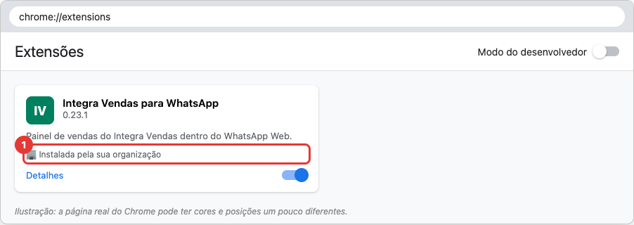
Não apareceu depois de 10 minutos? Feche todas as janelas do Chrome e abra de novo. Se ainda não vier, avise o responsável: o computador pode não ter entrado no cadastro da empresa.
B) Com o instalador (Instalar-IntegraVendas.exe)
O instalador copia a extensão para uma pasta fixa do seu usuário do Windows (%LOCALAPPDATA%\IntegraVendas\extensao), já deixa o caminho copiado para você colar e abre a página de Extensões do Chrome. Você só faz a parte que o Chrome exige que seja feita à mão.
- Baixe o instalador em https://chapzin.github.io/integra-vendas-whatsapp/instalador/Instalar-IntegraVendas.exe (ou use o arquivo que o responsável mandou).
- Dê dois cliques em Instalar-IntegraVendas.exe. Se o Windows perguntar se quer executar, clique em Mais informações e depois em Executar assim mesmo.
- Abre uma janela preta com as instruções. Deixe ela aberta para consultar.
- O Chrome abre sozinho na página Extensões. Se não abrir, abra o Chrome e digite chrome://extensions.
- No canto de cima, à direita, ligue a chave Modo do desenvolvedor (1).
- Clique em Carregar sem compactação (2).
- Na janela de escolher pasta, clique na barra de endereço lá em cima, aperte Ctrl+V e Enter. O caminho já estava copiado.
- Clique em Selecionar pasta.
- Confira o cartão Integra Vendas para WhatsApp (3) com a chave ligada e a versão certa.
- Clique no ícone de quebra-cabeça, ao lado da barra de endereço, e no alfinete ao lado de Integra Vendas para WhatsApp. O ícone fica sempre à vista.
- Abra o WhatsApp Web (ou aperte F5 nele). O painel aparece à direita.
- Volte à janela preta e aperte Enter para fechá-la.
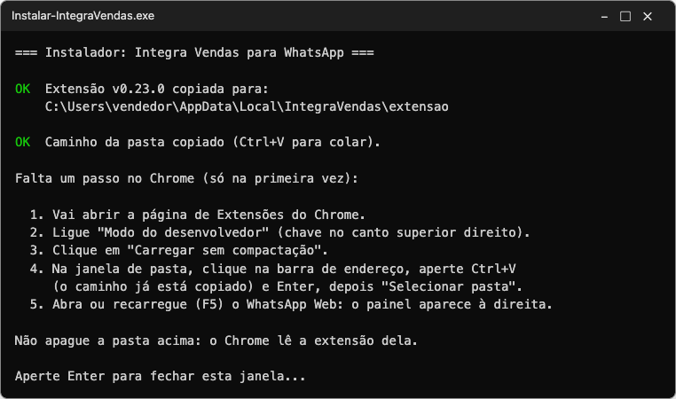
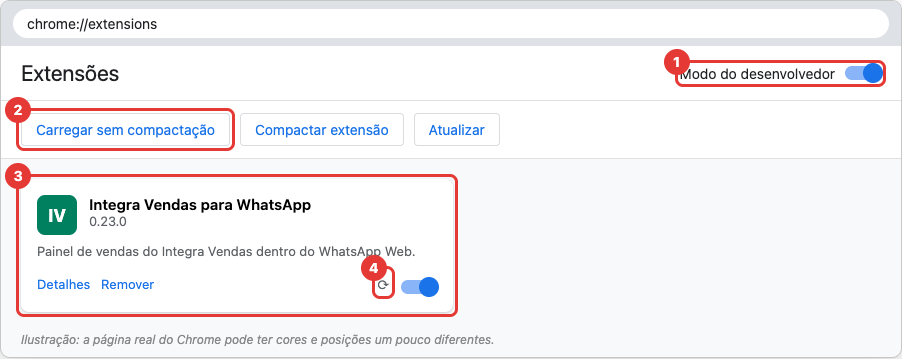
- Não apague nem mova a pasta
IntegraVendas. O Chrome lê a extensão dela todos os dias. - Ao abrir, o Chrome pode mostrar o aviso Desativar extensões no modo de desenvolvedor. Feche o aviso no X. Não clique em Desativar, senão o painel some.
C) Com a pasta compactada (.zip)
Serve para qualquer computador, inclusive quando o instalador não roda (Mac, Windows que bloqueia programas). Você faz à mão o que o instalador faria.
- Baixe a extensão em https://chapzin.github.io/integra-vendas-whatsapp/instalador/integra-vendas-extensao.zip.
- Clique com o botão direito no arquivo baixado e escolha Extrair tudo (no Mac, dois cliques no arquivo).
- Guarde a pasta extraída num lugar fixo, por exemplo Documentos. Dentro dela deve aparecer o arquivo manifest.json.
- No Chrome, abra chrome://extensions e ligue Modo do desenvolvedor.
- Clique em Carregar sem compactação e escolha a pasta extraída (a que tem o manifest.json). Clique em Selecionar pasta.
- Confira o cartão Integra Vendas para WhatsApp com a chave ligada e fixe o ícone (quebra-cabeça → alfinete).
- Aperte F5 no WhatsApp Web.
Para atualizar com o .zip: baixe o .zip novo, extraia e substitua o conteúdo da mesma pasta pelos arquivos novos (mesmo lugar, mesmo nome). Depois clique em Recarregar no cartão da extensão e aperte F5 no WhatsApp. Usando a mesma pasta, fichas e retornos continuam.
Use sempre o mesmo jeito. Quem instalou pelo instalador atualiza pelo instalador; quem instalou pelo .zip atualiza pelo .zip. Misturar cria duas cópias da extensão no Chrome, cada uma com as suas fichas.
Se acontecer: faça Exportar backup (aba Ajustes) na cópia que você usava, remova a outra em chrome://extensions e, se precisar, use Importar na que ficou.
Quando chegar uma versão nova
Chrome da empresa: não faça nada. A versão nova chega sozinha em algumas horas. Quando ela chegar, o painel pode mostrar o aviso vermelho abaixo; aperte F5 no WhatsApp.
Instalador: baixe de novo o Instalar-IntegraVendas.exe pelo mesmo link (ele sempre traz a versão mais nova) ou use o que o responsável mandou. Faça assim:
- Rode o instalador novo. Ele troca os arquivos na mesma pasta. Suas fichas, retornos e o login não se perdem.
- A janela mostra ATUALIZAÇÃO e o Chrome abre na página Extensões.
- No cartão Integra Vendas para WhatsApp, clique na seta redonda (Recarregar). Confira o número da versão.
- Volte para a aba do WhatsApp Web e aperte F5.
- Espere o WhatsApp carregar. O painel volta já na versão nova.
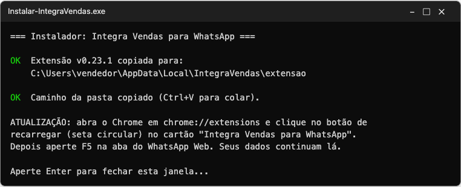
Se você esquecer o passo do F5, o painel antigo continua na tela, mas perde a ligação com a extensão. Ao clicar em qualquer coisa que fala com o sistema, aparece o aviso em vermelho abaixo.
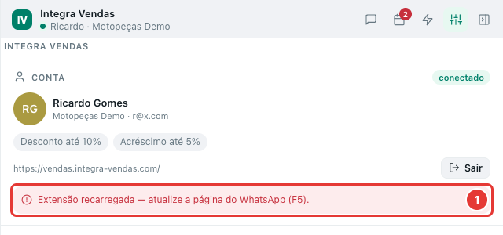
Visão geral da tela
Com tudo instalado, a tela fica dividida em três partes: a lista de conversas do WhatsApp (esquerda), a conversa aberta (meio) e o painel da extensão (direita).
Os itens 5 a 8 só aparecem quando há uma conversa aberta. A busca de peça, o orçamento e o pedido (itens 7 e 8) estão explicados na parte 2. Os Retornos, Enviados e a Ficha (item 6), na parte 4.
O cabeçalho do painel e as 4 abas
No topo do painel ficam o nome da extensão, a sua conexão e cinco botões pequenos. Quatro deles são as abas: cada um troca o que aparece no painel. Parando o mouse em cima de um botão, aparece o nome dele.
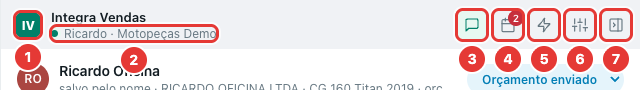
A aba que está aberta fica com o fundo verde claro.
Abrir, fechar e alargar o painel
Esconder e mostrar
Às vezes você quer o WhatsApp em tela cheia, por exemplo para ver uma foto grande que o cliente mandou.
- Clique no botão Recolher painel (o último do cabeçalho, item 7 da figura acima).
- O painel some e o WhatsApp ocupa a tela toda.
- Para trazer o painel de volta, clique na etiqueta verde Integra Vendas que fica em pé na borda direita da tela.
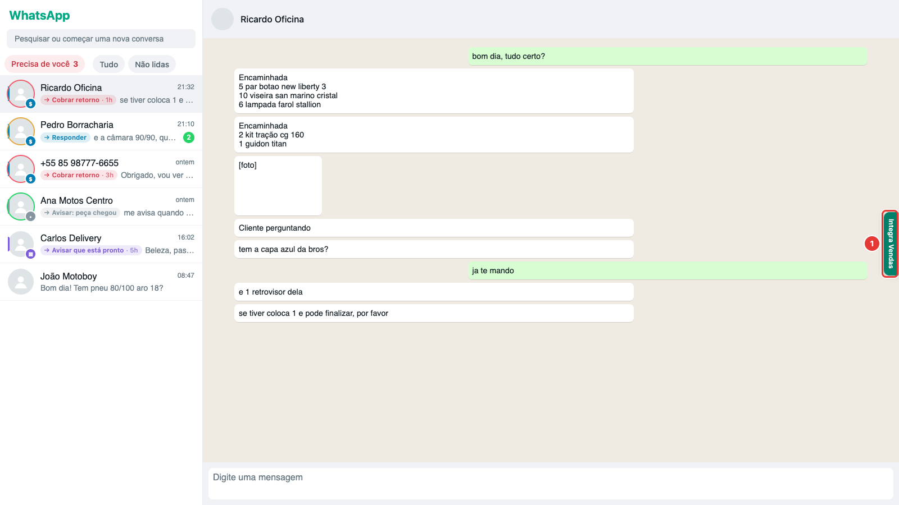
Deixar o painel mais largo ou mais estreito
Na borda esquerda do painel existe uma alça invisível. Quando o mouse passa por cima, aparece uma linha verde fina e a setinha do mouse vira uma seta dupla (↔).
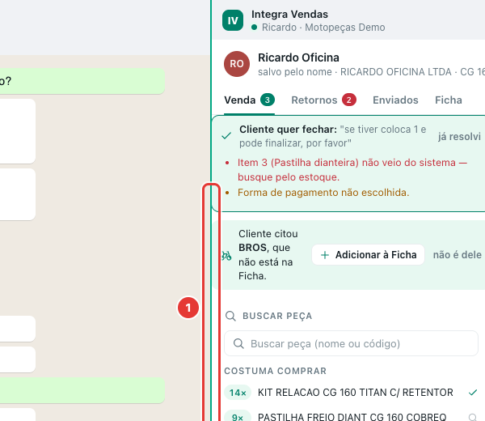
- Leve o mouse até a divisa entre a conversa e o painel, até aparecer a linha verde.
- Aperte o botão do mouse e segure.
- Arraste para a esquerda para alargar o painel, ou para a direita para estreitar.
- Solte o botão. O painel guarda essa largura para as próximas vezes.
- Para voltar à largura normal, dê dois cliques rápidos na alça.
Quando o painel fica estreito, o orçamento deixa de ficar ao lado e passa para baixo da busca. Nada some, só muda de lugar. Isso ajuda em monitor pequeno, quando você quer ver mais da conversa.
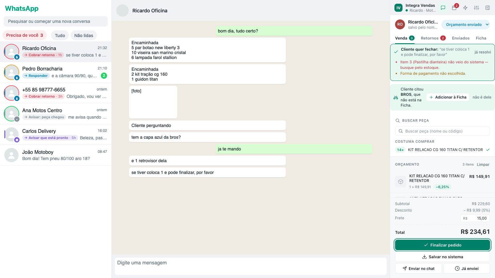
Tema claro e escuro
O painel não tem botão próprio de tema. Ele segue o WhatsApp: se o WhatsApp Web estiver no tema escuro, o painel também fica escuro. Para trocar, mude o tema nas configurações do próprio WhatsApp Web.
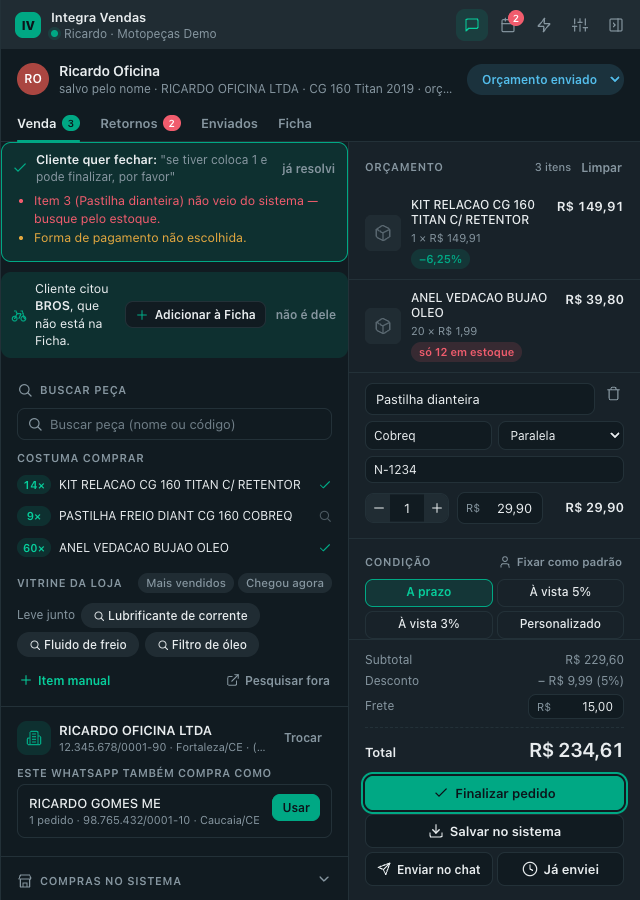
Entrar no Integra Vendas
Sem entrar, o painel já guarda fichas e retornos. Mas para buscar peça com preço e estoque, cotar a lista do cliente e tirar pedido, ele precisa estar conectado ao sistema da empresa com o seu usuário de vendedor.
Quando você não está conectado, o cabeçalho avisa:
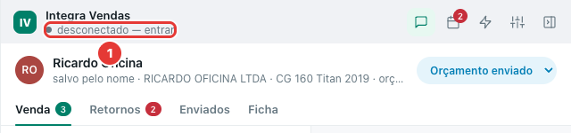
- Clique em desconectado — entrar no cabeçalho (ou no botão Ajustes).
- No quadro Entrar, clique no campo E-mail e digite o e-mail que você usa no Integra Vendas.
- Clique no campo Senha e digite a sua senha.
- Clique no botão verde Entrar (ou aperte Enter no campo da senha).
- Espere o botão mostrar Entrando… e depois sumir.
- Confira: aparece o aviso Conectado ao Integra Vendas. embaixo do painel e a bolinha do cabeçalho fica verde.
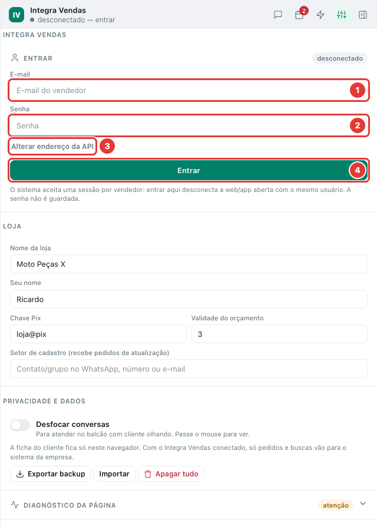
Uma sessão por vendedor. O sistema só deixa o mesmo usuário conectado num lugar. Se você entrar aqui, a sessão aberta com o mesmo usuário no site ou no aplicativo do celular cai. Não use o usuário de outro colega.
Endereço do sistema
O painel já vem apontando para o endereço certo do Integra Vendas. Só troque se a empresa pedir.
- Clique em Alterar endereço da API.
- Apague o endereço do campo Endereço da API e digite o que a empresa passou.
- Preencha e-mail e senha e clique em Entrar.
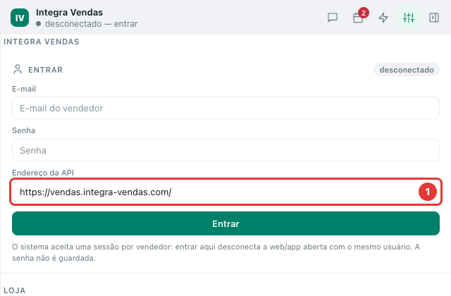
Quando dá erro ao entrar
Se algo der errado, o motivo aparece numa faixa vermelha logo abaixo do botão Entrar.
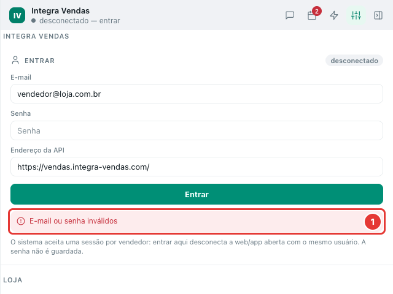
- E-mail ou senha errados: confira se não tem espaço sobrando no e-mail e se o Caps Lock está desligado. Digite a senha de novo.
- Muitas requisições seguidas; tente em alguns segundos.: o sistema pediu uma pausa. Espere um pouco e tente de novo.
- O servidor do IntegraVendas deu erro interno.: o problema é no sistema da empresa, não no seu computador. Tente mais tarde ou avise o responsável.
- Sessão expirada — entre de novo no IntegraVendas.: aparece depois de um tempo, ou quando alguém entrou com o seu usuário em outro lugar. Entre de novo.
- Extensão recarregada — atualize a página do WhatsApp (F5).: veja o tópico “Quando chegar uma versão nova”, no começo desta parte.
Como fica depois de conectado
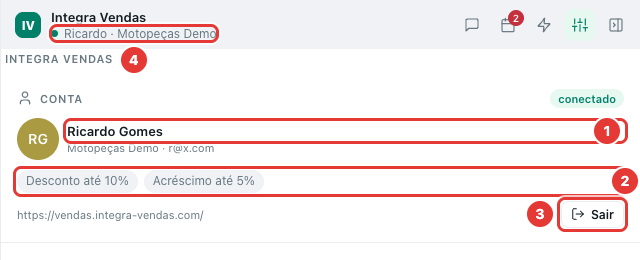
Use Sair quando for deixar o computador do balcão para outro vendedor. Assim os pedidos dele não saem no seu nome.
A aba Ajustes em detalhe
Clique no botão Ajustes do cabeçalho. Ela tem quatro blocos: Integra Vendas (a conta, explicada acima), Loja, Privacidade e dados e Diagnóstico da página.
Bloco Loja
Preencha estes campos uma vez, no primeiro dia. Eles entram nos textos que o painel prepara para o cliente.
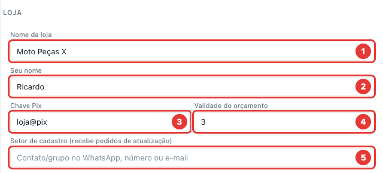
- Nome da loja: vai no título do orçamento que o cliente recebe (“Orçamento – Moto Peças X”) e nas respostas prontas que falam da loja. Mude só se a loja mudar de nome.
- Seu nome: usado nas respostas prontas que assinam com o nome do vendedor. Se estiver vazio, o painel coloca seu primeiro nome sozinho quando você entra no sistema. Mude se preferir um apelido (ex.: "Zé").
- Chave Pix: vai no fim do orçamento e no resumo do pedido, para o cliente já pagar. Mude quando a loja trocar de chave. Confira com cuidado: chave errada é dinheiro indo para o lugar errado.
- Validade do orçamento: quantos dias o preço vale. O orçamento sai com a frase “Válido até” e a data. Mude quando a loja mudar a regra (por exemplo, em época de reajuste, 1 dia). Deixe vazio para não mostrar validade.
- Setor de cadastro: para quem vai o pedido de atualização quando o WhatsApp do cliente não bate com o telefone do cadastro. Pode ser o nome de um contato ou grupo do WhatsApp, um número ou um e-mail. Pergunte à empresa quem cuida do cadastro. Esse pedido está explicado na parte 4.
Bloco Privacidade e dados
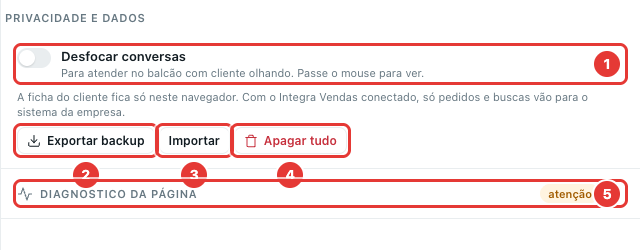
Desfocar conversas (1): serve para quando o cliente está no balcão olhando para a sua tela. Ligada, ela embaça os nomes, as fotos e as mensagens do WhatsApp. Para ler, basta passar o mouse por cima da área que você quer ver.
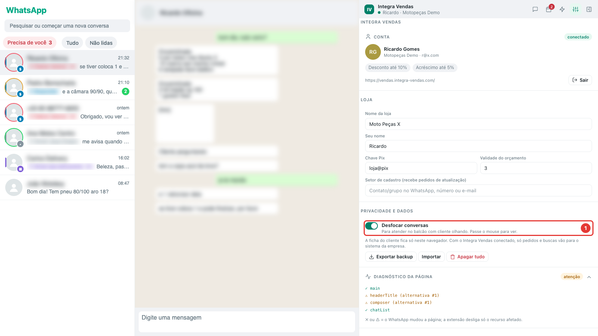
Onde ficam as fichas. A ficha dos clientes, os retornos e as respostas prontas ficam guardados só neste computador, neste Chrome. Só os pedidos e as buscas de peça vão para o sistema da empresa. Por isso existem os botões de cópia:
- Exportar backup (2): baixa um arquivo com tudo o que o painel guardou (o nome começa com “integra-vendas-whatsapp-” e termina com a data). Faça isso de vez em quando e guarde o arquivo num lugar seguro.
- Importar (3): abre um backup salvo antes. Use quando trocar de computador ou reinstalar o Chrome.
- Apagar tudo (4): apaga todos os clientes, orçamentos e respostas deste computador.
Importar troca os clientes, as respostas, a lista de espera e os ajustes deste computador pelos que estão no arquivo. O que você fez depois daquele backup some. Só importe se tiver certeza de que o arquivo é o mais novo.
Apagar tudo não tem volta. O painel pede confirmação antes:
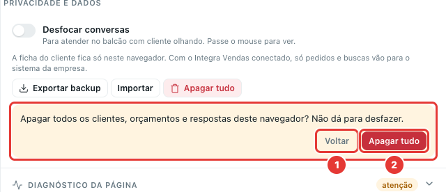
Diagnóstico da página
O WhatsApp Web muda a sua tela de vez em quando. O Diagnóstico da página mostra se o painel ainda acha as partes do WhatsApp de que ele precisa. Ao lado do título aparece ok (verde) ou atenção (laranja). Clique no título para abrir a lista.
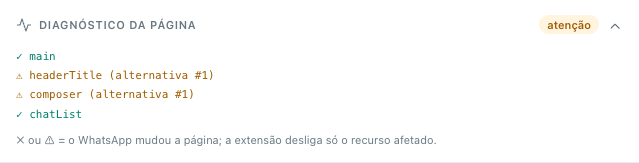
Com ✗ ou ⚠, o painel desliga só o recurso afetado e o resto continua funcionando. Se algo parar de funcionar (por exemplo, o texto não vai para a caixa de mensagem), abra o diagnóstico, tire uma foto da tela e mande para quem cuida da extensão.
O que aparece na lista de conversas
A extensão desenha algumas marcas na própria lista de conversas do WhatsApp. Elas só aparecem nos clientes que já têm ficha no painel. Assim, sem abrir conversa por conversa, você vê quem está esperando e em que pé está cada venda.
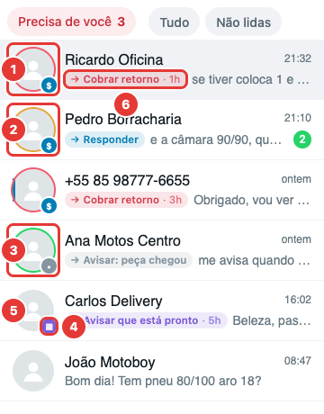
Os anéis em volta da foto
- Vermelho: um retorno que você combinou já passou da hora (Cobrar retorno), ou um orçamento ou Pix está parado há 2 dias ou mais.
- Verde: a peça que o cliente pediu e estava em falta já tem no estoque (Avisar: peça chegou). O painel confere o estoque sozinho, de tempos em tempos, só quando você está conectado ao sistema.
- Âmbar: tem mensagem não lida desse cliente (Responder).
- Sem anel: nada urgente.
Se valer mais de uma cor, fica a mais importante: vermelho, depois verde, depois âmbar.
O símbolo e a faixa: a etapa da venda
O símbolo no canto da foto e a faixa na borda mostram em que etapa o cliente está (a etapa é escolhida no painel, veja a parte 4):
- $ Orçamento enviado · ⧗ Aguardando Pix · ✓ Pago · ▦ Separando · ➜ Enviado/Retirado · ★ Pós-venda · ✕ Perdido · • Novo
A etiqueta de ação
Na segunda linha, antes da última mensagem, aparece o próximo passo, com uma seta: Cobrar retorno, Responder, Cobrar orçamento, Conferir Pix, Separar pedido, Avisar que está pronto, Confirmar entrega ou Avisar: peça chegou. Ao lado, o tempo (ex.: “· 1h”). Quando é urgente, a etiqueta fica vermelha.
Clicar na etiqueta abre a conversa desse cliente e o painel já na aba Conversa.
O botão "Precisa de você"
Na barra de filtros do WhatsApp (onde ficam Tudo e Não lidas), a extensão coloca um botão a mais: Precisa de você, com um número.
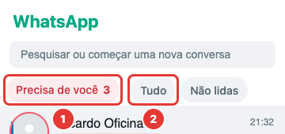
O número conta os clientes com retorno atrasado, orçamento parado, peça que chegou e retorno marcado para hoje. Mensagem não lida não entra nessa conta, porque o WhatsApp já mostra isso no filtro Não lidas. Quando não há ninguém, o botão fica cinza com 0.
- Clique em Precisa de você. O botão fica vermelho cheio e uma lista aparece por cima das conversas.
- Leia a lista: o mais urgente vem primeiro.
- Clique no nome de um cliente. A conversa dele abre no meio e o painel mostra a ficha dele.
- Faça o que tem que fazer (responder, cobrar, avisar).
- Clique no próximo cliente da lista. A lista continua aberta até você fechar.
- Para voltar à lista normal do WhatsApp, clique no ×, em Tudo (ou em outro filtro do WhatsApp), ou de novo em Precisa de você.
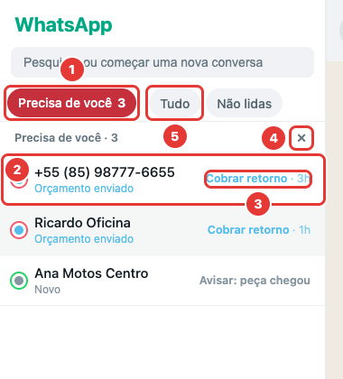
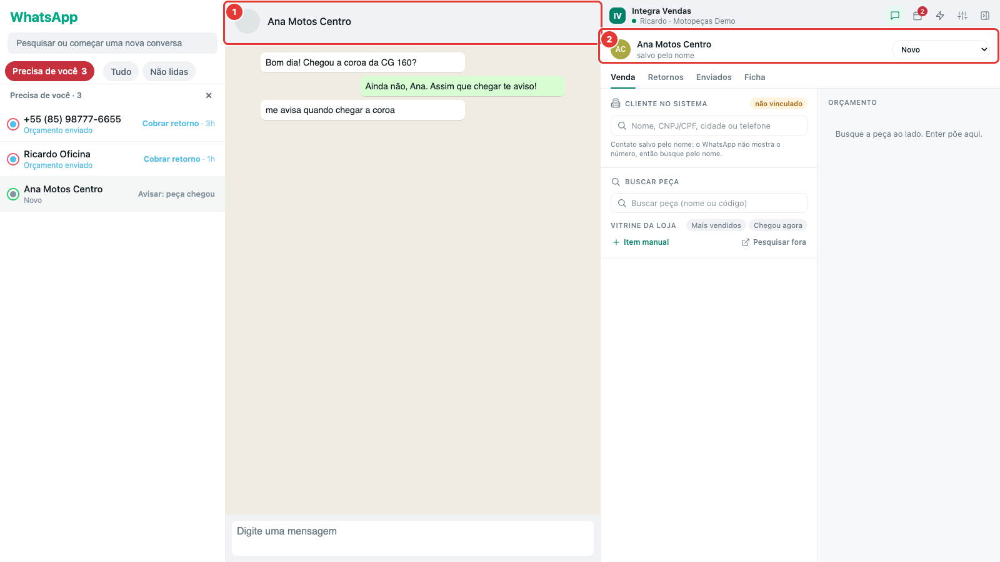
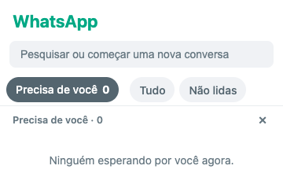
As marcas e o número se atualizam sozinhos enquanto o WhatsApp está aberto (pelo menos uma vez por minuto).
Quando você troca de conversa
O painel acompanha a conversa aberta. Clicou em outro cliente no WhatsApp, o painel troca sozinho para a ficha desse cliente. Você não precisa procurar nada no painel.
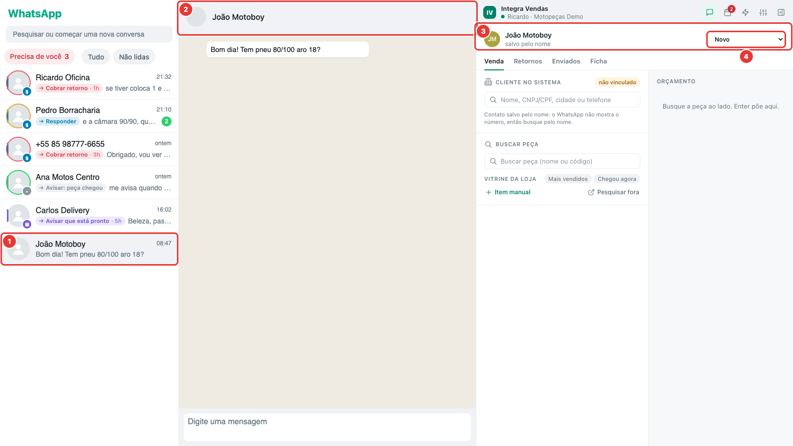
O que acontece na troca:
- O orçamento que você estava montando para o cliente anterior fica guardado na ficha dele. Quando voltar à conversa dele, está lá.
- A busca de peça é limpa, para não misturar a peça de um cliente com a do outro.
- Se você estava na aba Conversa, continua nela, já com o novo cliente. Se estava em Hoje, Respostas ou Ajustes, o painel fica onde está. Clique em Conversa para ver o cliente.
- Cliente que nunca foi atendido pelo painel aparece como Novo, sem ficha. A ficha começa a existir quando você mexe nele (monta orçamento, muda a etapa, preenche a moto).
Sem nenhuma conversa aberta (logo depois de abrir o WhatsApp, por exemplo), a aba Conversa mostra só um aviso:
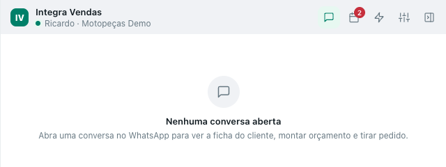
Parte 2Vender: buscar peça, montar orçamento e tirar o pedido
Esta parte ensina o dia a dia do balcão: o cliente pede uma peça no WhatsApp, você acha a peça, monta o orçamento, manda para ele e, quando ele fechar, tira o pedido no sistema da loja.
Tudo acontece na aba Conversa (ícone de balão, no alto do painel), sub-aba Venda. Para entrar no painel e conectar ao sistema, veja a parte 1.
Quais botões gravam no sistema da loja
Quase tudo nesta aba fica só no painel, no seu computador. Só dois botões gravam de verdade no sistema da loja:
| Botão | Grava no sistema da loja? | O que faz |
|---|---|---|
| Salvar no sistema / Atualizar nº … | Sim | Cria (ou atualiza) um pedido em situação de orçamento no sistema. |
| Finalizar pedido (e Finalizar / Cancelar no Histórico) | Sim | Manda o pedido para o faturamento (ou cancela). Depois disso não dá para mudar pelo painel. |
| Enviar no chat, enviar preço, arrastar foto | Não | Só escreve na caixa do WhatsApp. |
| Já enviei | Não | Anota no painel que o orçamento foi mandado e agenda os retornos. |
| Repetir, Pôr no orçamento, Limpar, Condição | Não | Mexem só no orçamento que está na tela. |
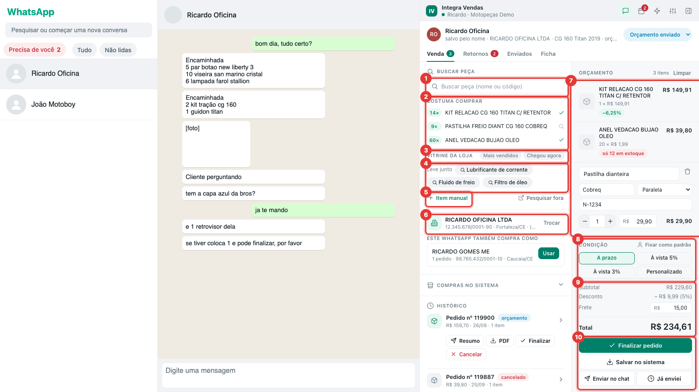
A tela tem duas colunas. Na esquerda você procura (peças, cliente, compras antigas). Na direita fica o orçamento que você está montando, com os botões para mandar e tirar o pedido.
Ligar a conversa ao cliente do sistema
Para tirar pedido, o painel precisa saber qual cliente do sistema é essa pessoa do WhatsApp. Isso se chama vincular. Você faz uma vez; nas próximas conversas ele já lembra.
O cartão do cliente
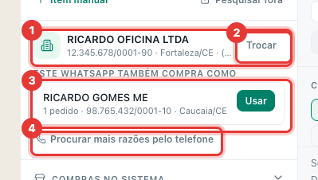
- Este WhatsApp também compra como…: muita gente compra por mais de uma empresa (a oficina e o nome pessoal, por exemplo). Clique em Usar para o pedido sair nessa outra empresa. A que está valendo mostra "em uso".
- Procurar mais razões pelo telefone: procura no cadastro outras empresas com o mesmo telefone.
Trocar o cliente
- Clique em Trocar. O cartão vira "Cliente no sistema".
- Se já houve venda para esse WhatsApp, aparece a lista Já vendeu para este WhatsApp. Clique no nome certo e pronto.
- Se não, digite no campo Nome, CNPJ/CPF, cidade ou telefone. A lista aparece sozinha a partir da 3ª letra.
- Use ↑ ↓ para andar na lista e Enter para vincular. Ou clique em Vincular. Esc limpa o campo.
- Mudou de ideia? Clique em Cancelar. O cliente que estava vinculado continua.
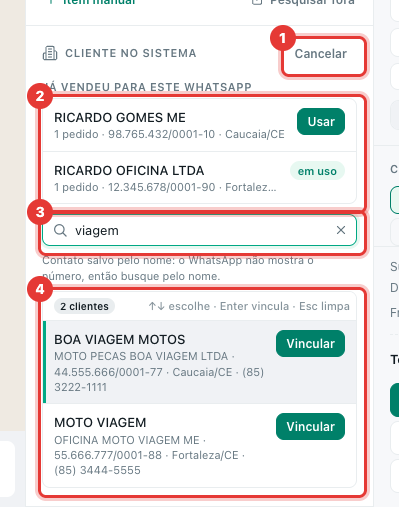
Ao trocar, aparece o aviso: "Pedido agora sai para X. O orçamento já salvo no sistema continua no cliente anterior." Ou seja: o que você já salvou no sistema não muda de cliente.
Como achar o cliente pelo nome (busca nova)
A busca de cliente foi refeita na versão 0.23.0 para funcionar do jeito que o vendedor digita no balcão: rápido, sem acento, com erro de digitação e com o nome pela metade. Você não precisa lembrar a razão social exata.
| Você digita | A busca entende |
|---|---|
| joão | Acento não importa: acha JOAO e JOÃO. |
| joão da silva | "da", "de", "do", "ltda", "me", "epp" são ignorados: procura "joao silva". |
| silva joão | A ordem das palavras não importa. |
| fatima pacatuba | Nome + cidade: a cidade ajuda a separar clientes com nome parecido. |
| cleyton olivera | Erro de digitação: acha CLEITON ... OLIVEIRA e avisa "parecidos com". |
| 12.345.678/0001-90 | CNPJ ou CPF. Digite com os pontos, como sai na nota. |
| (85) 98765-4321 | Telefone: acha com ou sem o 9 da frente. |
O painel também coloca em ordem o que o sistema devolve. Vêm primeiro:
- quem já comprou por este WhatsApp;
- quem tem todas as palavras que você digitou no nome fantasia ou na razão social;
- quem tem o nome começando pela primeira palavra;
- depois, quem só tem as palavras na cidade, no bairro ou no e-mail.
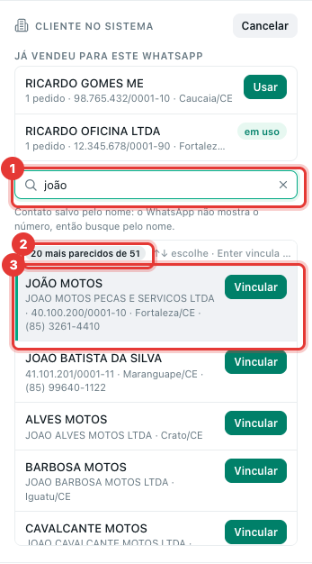
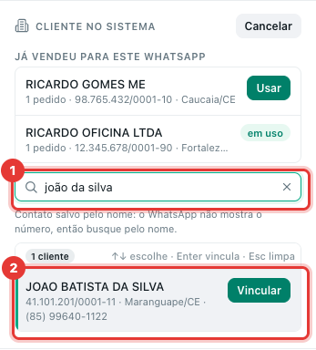
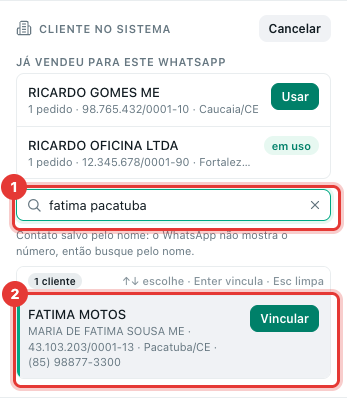
Quando você erra uma letra: "parecidos com"
Se nada bate exatamente, o painel não desiste. Ele tenta de novo com o começo de cada palavra (4 letras, depois 3) e, se ainda precisar, larga a palavra mais curta. Para no primeiro resultado que tem todas as palavras parecidas com o que você digitou.
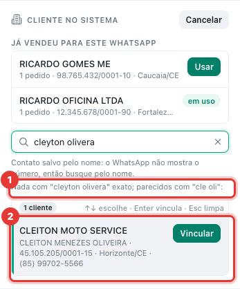
Nome muito comum: "digite mais uma palavra"
Palavras como "motos", "peças" ou "josé" existem em centenas de clientes. O painel mostra os 20 mais parecidos e avisa quantos existem. Se o cliente certo não está entre os 20, acrescente uma palavra: o sobrenome, o nome da oficina ou a cidade.
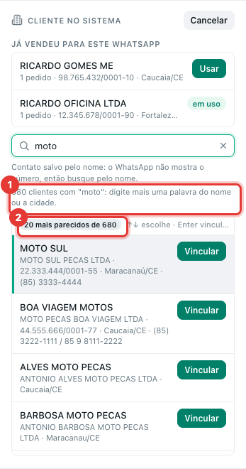
O cliente escreve: "aqui é o Chico da oficina lá de Eusébio". No cadastro ele é FRANCISCO DAS CHAGAS PEREIRA, fantasia CHAGAS MOTO PECAS.
- "chico" não acha: apelido não está no cadastro.
- "francisco eusebio" ou "chagas" acham na hora.
Quando não souber o nome do cadastro, pergunte ao cliente o CNPJ ou CPF. É o jeito mais certeiro.
Cliente não encontrado
Se nem os parecidos aparecem, a mensagem é Nenhum cliente com "…", nem parecido. Antes de concluir que ele não tem cadastro:
- tente só uma palavra do nome (a mais rara, como o sobrenome);
- tente o nome da oficina ou da loja (nome fantasia);
- tente o CNPJ ou o CPF;
- tente a cidade junto com uma palavra do nome.
Se ainda assim não achar, o cliente precisa ser cadastrado no sistema. Peça ao setor de cadastro, como sempre. Enquanto isso, você pode montar e mandar o orçamento pelo chat; só o pedido no sistema precisa do cliente vinculado.
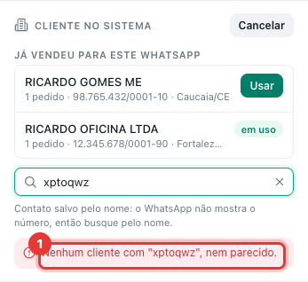
Conversa nova: o painel procura pelo telefone
Quando a conversa ainda não tem cliente, o painel procura sozinho pelo número do WhatsApp.
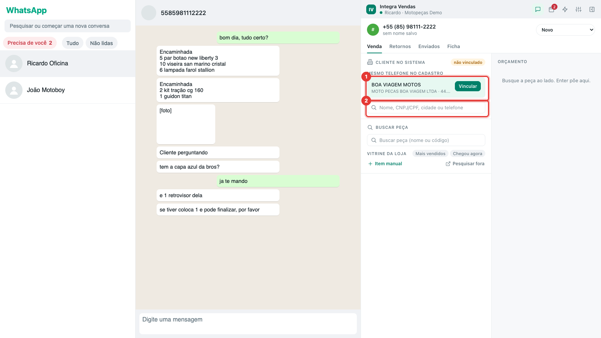
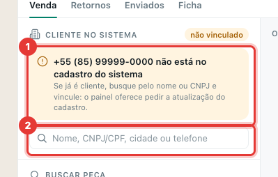
Aviso de cadastro desatualizado
Às vezes o cliente está vinculado, mas o telefone do cadastro está velho. Aparecem dois avisos possíveis:
- Cadastro com o celular sem o 9: o número é o mesmo, só falta o 9 na frente.
- Este WhatsApp não está no cadastro do cliente: o número é outro.
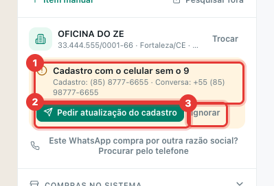
Pedir atualização do cadastro abre a conversa (ou e-mail) do setor de cadastro, configurado em Ajustes, com o pedido já escrito. Você revisa e envia. O painel não muda o cadastro sozinho.
Buscar a peça
- Clique em Buscar peça (nome ou código).
- Digite pelo menos 3 letras. Ex.: "pastilha", "kit relacao bros" ou o código.
- A lista aparece sozinha enquanto você digita.
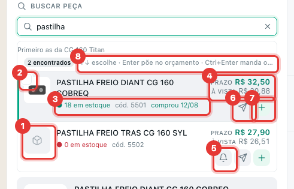
O que cada linha mostra
- Estoque: quantas unidades a loja tem agora.
- múlt.: a peça só sai em múltiplos desse número (ex.: de 10 em 10).
- Preço: o de cima é a prazo (preço de tabela). O de baixo é à vista com 5% de desconto. Esse só aparece se o seu limite de desconto permite 5%.
- + vira ✓ quando a peça já está no orçamento. Clicar de novo soma mais uma.
- Sino: põe o cliente na lista de espera da peça. Quando chegar, o painel lembra você (veja a parte 5).
Atalhos de teclado
| Tecla | O que faz |
|---|---|
| ↑ ↓ | Anda na lista. |
| Enter | Põe a peça marcada no orçamento. Se ela já está lá, soma mais um múltiplo. |
| Ctrl+Enter | Escreve o preço da peça no chat. |
| Esc | Limpa a busca. |
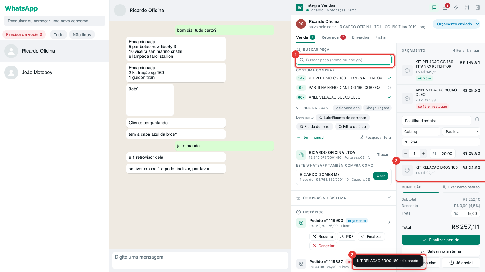
O preço que vai para o cliente
O aviãozinho (ou Ctrl+Enter) escreve na caixa do WhatsApp: nome da peça, código, preço de tabela, múltiplo e "Pronta entrega." ou "Sem estoque no momento; posso encomendar pra você.". A quantidade do estoque nunca vai para o cliente.
Mandar o preço de várias peças de uma vez
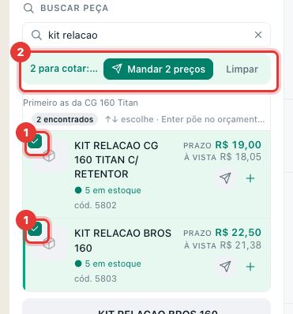
A ficha da peça
Clique no nome da peça para abrir a ficha.
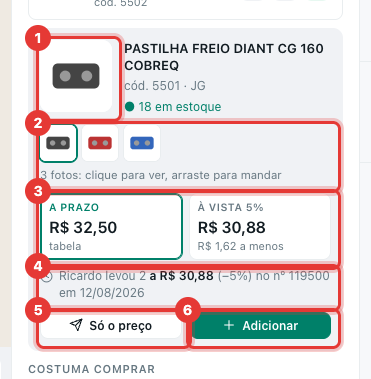
Filtrar e ordenar
- Moto da Ficha primeiro: se a Ficha do cliente tem moto (ex.: CG 160 Titan), as peças dessa moto sobem. Aparece "Primeiro as da …". A Ficha está na parte 4.
- Tipo: com muitos resultados, aparecem botões de tipo (ex.: OLEO). Clique para ver só aquele tipo.
- Tirar uma palavra: escreva com um traço na frente. Ex.: "oleo -moto" tira o que tem "moto".
- A peça que você costuma escolher numa busca vai subindo na lista.
- Aparecem 30 por vez. Use Mostrar mais para ver o resto.
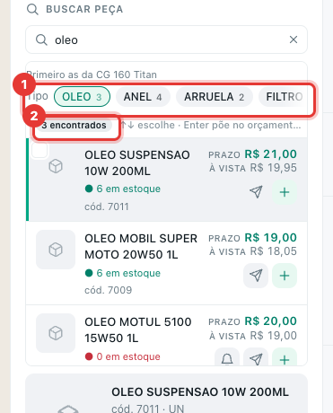
Sinônimos
Se a busca não acha nada, o painel tenta outro nome da mesma peça (ex.: espelho ↔ retrovisor) ou troca o modelo pela marca. Ele avisa: "Nada com espelho. Mostrando retrovisor."
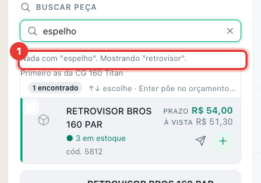
Atalhos para achar peça mais rápido
Costuma comprar
As peças que esse cliente mais compra. Clique numa para buscá-la pelo código.
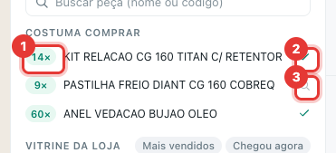
Vitrine da loja
Duas listas: Mais vendidos e Chegou agora. Só aparecem peças com estoque. Clique numa para buscar, já com o preço deste cliente. A foto pode ser arrastada para a conversa.
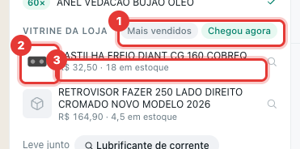
Leve junto
Sugere até 3 peças que costumam sair junto com as do orçamento (ex.: quem leva kit relação leva lubrificante de corrente). Passe o mouse para ver "Sai junto em X% dos pedidos…". Clique para buscar.
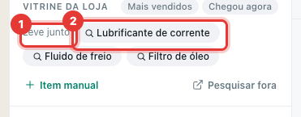
Item manual e Pesquisar fora
- Item manual: põe uma linha em branco no orçamento para uma peça que não está no sistema (encomenda, peça de outro fornecedor). Você preenche Peça, Marca, Tipo (Original/Paralela), Código e preço.
- Pesquisar fora: abre Google, Mercado Livre, Riffel ou Cofap com a primeira peça do orçamento e a moto do cliente. Serve para descobrir código ou aplicação.
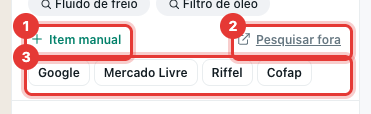
Arrastar a foto da peça para a conversa
Mostrar a foto vende. Você pode pegar a foto da peça no painel e soltar na conversa. O painel monta a foto com uma legenda (a "ficha" da peça) e abre a tela de envio do WhatsApp.
- Clique na foto e segure o botão do mouse.
- Leve até a conversa, no meio da tela. Aparece uma área tracejada: "Solte para mandar a foto com a ficha da peça".
- Solte o botão.
- O WhatsApp abre a prévia da foto com a legenda já escrita. Aparece "Foto com a ficha pronta. Revise e aperte Enviar."
- Leia a legenda, mude se quiser e aperte Enviar do WhatsApp.
A legenda muda conforme de onde vem a foto
| De onde você arrasta | Onde soltar | O que a legenda leva |
|---|---|---|
| Resultado da busca | Conversa | Nome, código, preço de tabela e se tem pronta entrega. |
| Ficha da peça (foto grande ou galeria) | Conversa | Igual à busca. |
| Vitrine da loja | Conversa | Igual à busca. |
| Item do orçamento | Conversa | Quantidade, preço de tabela riscado, preço combinado com % de desconto, total e entrega (pronta, parte ou sob encomenda). |
| Item de um pedido aberto (Compras no sistema) | Conversa | A peça com o nº e a data do pedido. |
| Opção da lista do Cotar | Conversa | Veja a parte 3. |
| Qualquer uma | Orçamento, busca ou outra lista | Nada acontece. Só a conversa aceita a foto. |
- Só dá para arrastar foto que carregou. Peça sem foto não arrasta.
- Clicar na foto grande da ficha também manda, sem precisar arrastar.
- "Já tem uma foto esperando envio": envie ou descarte a prévia aberta antes de arrastar outra.
- "Foto anexada, mas não achei a legenda": a legenda foi copiada. Clique na legenda e cole com Ctrl+V.
- Tudo que você manda assim fica registrado na sub-aba Enviados (parte 4).
Montar o orçamento
O orçamento fica na coluna da direita. Cada peça é uma linha. Clique na linha para abrir e mexer.
Item do sistema aberto
- Quantidade: o − e o + andam de acordo com o múltiplo da peça.
- Preço ou desconto: você pode digitar o preço ou o %. Um calcula o outro.
- Se você cobra acima da tabela, aparece acrésc. em vez de desc.
Múltiplo e estoque
Desconto acima do seu limite
Cada vendedor tem um limite de desconto. Passou dele, o desconto fica vermelho. O pedido não pode ser salvo nem finalizado assim.
Item manual
Fica sempre aberto, com os campos Peça, Marca, Tipo (Original ou Paralela), Código, quantidade e preço. Marca, tipo e código aparecem no texto do orçamento (veja a imagem 27, item manual "Pastilha dianteira").
Limpar tudo
O link Limpar, no alto do orçamento, tira todos os itens. Para não apagar sem querer, o primeiro clique só troca o texto para "Confirmar: limpar tudo". Clique de novo em até 3 segundos para confirmar.
Condição de pagamento
Aparece quando há pelo menos uma peça do sistema. Ela aplica o mesmo desconto em todos os itens do sistema:
- A prazo: preço de tabela.
- À vista 5% e À vista 3%: desconto fixo. O botão fica apagado se passar do seu limite.
- Personalizado: você digita o % em "Desconto em todos os itens".
- Fixar como padrão: os próximos orçamentos desse cliente já começam nessa condição. Clique de novo para desfazer.
- Antes: … mostra as últimas condições que você usou com ele.
- Depois de escolher a condição, você ainda pode mudar o desconto de um item abrindo a linha dele.
Os totais
- Subtotal: soma pelo preço de tabela.
- Desconto: quanto o cliente economiza, em R$ e %.
- Frete: digite o valor, se houver.
- Total: o que o cliente paga.
Mandar o orçamento e tirar o pedido
Enviar no chat
Escreve o orçamento completo na caixa do WhatsApp: itens, quantidades, preços, condição, frete e total. Aparece "Texto inserido na conversa. Revise e aperte Enviar." Não grava nada no sistema.
Já enviei
Depois de enviar o orçamento no WhatsApp, clique em Já enviei. O painel:
- guarda o orçamento no histórico do painel;
- muda a etapa para Orçamento enviado;
- agenda lembretes para cobrar a resposta: 2 horas, dia seguinte, 3 dias e 7 dias (veja a parte 4);
- esvazia o orçamento para a próxima venda.
Pedido no sistema
Com pelo menos uma peça do sistema, aparece o quadro Pedido no sistema embaixo da Condição.
Salvar no sistema (grava no sistema)
Cria um pedido em situação de orçamento no sistema da loja. Ele ainda pode ser mudado. Aparece "Pedido nº … salvo como orçamento".
Finalizar pedido (grava no sistema)
- Confira itens, empresa, pagamento e frete.
- Clique em Finalizar pedido.
- Aparece a pergunta: "Finalizar o pedido de R$ … para … ? Ele segue para o faturamento e não poderá mais ser alterado daqui."
- Clique em Sim, finalizar. Ou Voltar para desistir.
Depois de finalizado:
Quando o pedido não sai
Se falta algo, o painel mostra uma mensagem vermelha embaixo dos botões e não grava nada. As mais comuns:
| Mensagem | O que fazer |
|---|---|
| Vincule o cliente do sistema (acima). | Ligue a conversa a um cliente (tópico 1). |
| Item N (…) não veio do sistema — busque pelo estoque. | É um item manual. Tire-o e ponha a peça do estoque. |
| Quantidade zerada / precisa ser múltiplo de N | Corrija a quantidade com − e +. |
| Desconto (ou acréscimo) acima do limite | Baixe o desconto do item ou da condição. |
| A empresa exige forma de pagamento. / …transportadora. | Escolha no quadro Pedido no sistema. |
| Boleto 28d exige pedido mínimo de R$ 200,00. | Aumente o pedido ou troque a forma de pagamento. |
Compras no sistema e Histórico
Compras no sistema
Clique no título Compras no sistema para abrir. Mostra os pedidos recentes do cliente, direto do sistema da loja.
Repetir monta um orçamento novo com as mesmas peças, com o preço de hoje. Nada é criado no sistema.
Ver os itens de um pedido
Clique no pedido. Ele abre na coluna da direita, no lugar do orçamento (só para ver).
- Pôr no orçamento faz o mesmo que Repetir. Peças que saíram de linha ficam de fora e o painel avisa: "Saiu de linha e não entrou: …".
- O PDF baixa no computador. Para mandar, anexe pelo clipe do WhatsApp.
- A foto de um item do pedido pode ser arrastada para a conversa (tópico 4).
Histórico
Mostra os últimos pedidos e orçamentos desse cliente.
Parte 3Quando o cliente manda mensagem: Cotar e avisos automáticos
O cliente manda a lista de peças pelo WhatsApp. Você não precisa procurar peça por peça. A extensão lê a mensagem, procura cada peça no sistema e monta uma lista para você conferir.
Ela também avisa sozinha duas coisas: quando o cliente quer fechar o pedido e quando ele fala de uma moto que não está na Ficha dele.
O botão verde "Cotar"
Passe o mouse em cima de uma mensagem do cliente que fala de peça. Aparece um botão verde no canto de cima da mensagem.
- Abra a conversa do cliente no WhatsApp.
- Passe o mouse em cima da mensagem com as peças.
- Clique no botão verde Cotar.
- A lista Cotar lista abre no painel da direita, na aba Venda.
O botão só aparece:
- nas mensagens do cliente (as brancas, à esquerda). Na sua mensagem (verde, à direita) ele não aparece;
- quando a mensagem tem quantidade ("2 guidon") ou nome de peça ("tem a capa azul da bros?"). "Bom dia" ou "tudo certo?" não ganham botão.
Várias mensagens seguidas viram uma lista só
Muito cliente manda a lista picada, em várias mensagens. O botão junta tudo o que o cliente mandou em seguida. Você pode clicar em qualquer uma dessas mensagens: o resultado é o mesmo.
| O que acontece na conversa | O que a extensão faz |
|---|---|
| Cliente manda outra mensagem com peça | Junta na mesma lista |
| Cliente manda uma foto | Continua juntando |
| Mensagem do cliente sem peça ("Cliente perguntando", "bom dia") | Pula essa mensagem |
| Você manda mensagem ou foto | Fecha a lista. O que vier depois é outra lista |
| Passa mais de 30 minutos entre uma mensagem e outra do cliente | Fecha a lista |
Selecionar um pedaço do texto
Outro jeito: com o mouse, pinte (selecione) só as linhas que interessam.
- Clique antes da primeira linha e arraste até o fim da última linha que você quer.
- Solte o mouse e espere um segundo.
- Se o trecho tiver 2 peças ou mais, a Cotar lista abre sozinha com essas linhas.
A tela "Cotar lista"
Cada linha da mensagem do cliente vira uma linha na lista. A extensão procura uma peça de cada vez. Enquanto procura, a linha mostra "na fila" ou "buscando…". Espere alguns segundos até todas terminarem.
Como ler uma linha
- Quantidade: vem da mensagem ("5 par" vira 5). Sem número, fica 1. Clique no número para mudar.
- Opções: a primeira é a melhor que a extensão achou. Abaixo vêm até 2 alternativas.
- Bolinha cheia ● = tem no estoque. Bolinha vazia ○ = sem estoque.
- O preço à direita é o preço de tabela.
| Etiqueta | O que quer dizer | O que você faz |
|---|---|---|
| confere (verde) | A peça bate com o pedido | Só dê uma olhada |
| confira (amarela) | Achou, mas tem outra parecida, ou achou procurando menos palavras | Veja se a opção de fundo verde é a certa |
| duvidoso (vermelha) | O que achou quase não bate com o pedido | Corrija o nome (veja abaixo) |
| não achei (vermelha) | Nenhum produto com esse nome | Corrija o nome ou tire a linha |
| erro | A busca falhou (internet, sistema) | Tecle Enter no nome para tentar de novo |
Trocar a opção
- Clique na opção certa, dentro da linha.
- Ela fica com fundo verde. É essa que vai para o orçamento e para a mensagem.
Aviso de unidade: "Pediu em par"
Quando o cliente pede em par (ou peça, unidade) e o produto é vendido de outro jeito, aparece em laranja: "Pediu em par; o produto é vendido em PC. Confira a quantidade." (número 7 da figura da linha).
Gírias e jeitos de escrever
O cliente escreve do jeito dele. A extensão troca a palavra antes de procurar. No campo do nome continua aparecendo o que o cliente escreveu, mas o resultado já vem certo.
| O cliente escreve… | A extensão entende… |
|---|---|
| tração | relação |
| guidon, guidom, guidam, guidau | guidão |
| maneta | manete |
| pastilia | pastilha |
| coxin | coxim |
| amortecedor | AMORTEC (como está no catálogo) |
| embreagem, embreage, imbreagem | EMBREAG (como está no catálogo) |
| carburador | CARBUR (como está no catálogo) |
| retrovisor (sem resultado) | tenta "espelho" (e o contrário) |
| moto sem resultado, ex.: "espelho bros" | tenta a marca: "espelho honda" (acha "ESPELHO ... P/HONDA") |
| "5 par", "10 un", "3 pç", "2 cx" | quantidade + unidade |
| "tem a capa azul da bros?" | tira "tem", "a", "da" e procura "capa azul bros" |
Se nada bater, a extensão tenta com menos palavras e avisa na linha: "nada exato, mostrando …". Nesse caso a etiqueta fica confira.
Corrigir uma palavra (e a extensão aprende)
- Clique no nome da linha (a caixa cinza).
- Corrija a palavra. Exemplo: troque "retrovizor" por "retrovisor".
- Tecle Enter. A linha procura de novo.
- Confira a opção nova.
A extensão aprende: quando você clica em Pôr no orçamento depois de trocar uma palavra só, ela guarda a troca ("retrovizor" → "retrovisor") e usa nas próximas buscas. Ela também lembra qual produto você escolheu para aquele nome.
"Dela", "desse", "da mesma": de qual moto?
O cliente pergunta da capa da Bros e depois escreve "e 1 retrovisor dela". A extensão descobre que "dela" é a Bros e já procura "retrovisor bros". Na linha aparece de onde ela tirou a moto.
Onde ela procura a moto, nesta ordem:
| Mensagem na linha | De onde veio a moto |
|---|---|
| (citada acima) | Da mesma lista, numa linha antes |
| (citada antes na conversa) | Das 20 mensagens anteriores |
| (da Ficha) | Da moto cadastrada na Ficha do cliente |
| (citada depois; confira) — em laranja | De uma linha que vem depois, na mesma lista. É um palpite: confira |
| "dela": não achei de qual moto; complete o nome — em laranja | Não achou. Escreva a moto no nome e tecle Enter |
Linha sem resultado
A linha com não achei não entra no orçamento. Você pode:
- corrigir o nome e teclar Enter;
- clicar no X para tirar a linha;
- deixar como está: na mensagem para o cliente ela vai em "Não encontrei: … Vou verificar e te retorno."
Os botões da Cotar lista
Os botões só funcionam depois que todas as linhas terminam de buscar. Eles usam só as linhas prontas (com uma opção de fundo verde).
Pôr tudo no orçamento
- Confira as linhas.
- Clique em Pôr 6 no orçamento (o número muda conforme as linhas prontas).
- As peças entram no orçamento, na coluna da direita.
- Se o produto é vendido em múltiplo (caixa com 10, por exemplo), a quantidade sobe para o múltiplo.
- Linhas sem resultado ficam na lista para você resolver. O aviso diz quantas ficaram.
- Para mexer no orçamento e finalizar o pedido, veja a parte 2.
Enviar ao cliente
- Clique em Enviar ao cliente.
- A cotação aparece escrita na caixa de mensagem do WhatsApp.
- Leia. Mude o que quiser.
- Aperte Enviar do WhatsApp (ou Enter).
A cotação traz, para cada peça: nome, código, quantidade × preço = total da peça, e se é "Pronta entrega", "Parte a pronta entrega, o restante sob encomenda" ou "Sob encomenda". No fim vem o Total e o que não foi achado.
Responder estoque
Serve quando o cliente só pergunta "tem?". A resposta não mostra preço nem quantas peças você tem.
- Clique em Responder estoque.
- A resposta aparece na caixa de mensagem, separada em grupos.
- Leia e aperte Enviar do WhatsApp.
Mandar a foto da peça com o preço
Quando a peça tem foto no sistema, a foto aparece pequena ao lado da opção, e embaixo da lista vem o aviso "Arraste a foto de uma opção para a conversa".
- Clique na foto pequena e segure o botão do mouse.
- Arraste até a conversa. A conversa fica com uma borda verde tracejada e o aviso "Solte para mandar a foto com a ficha da peça".
- Solte o mouse.
- O WhatsApp abre a foto pronta para envio, com nome, código, quantidade e preço na legenda.
- Confira e aperte Enviar.
Faixa "Cliente quer fechar"
Quando o cliente escreve que quer fechar, aparece uma faixa verde no alto da aba Venda. Ela mostra a frase dele e o que ainda falta para tirar o pedido.
| O cliente escreve… | Abre a faixa? |
|---|---|
| "pode finalizar", "pode fechar", "pode separar", "pode faturar" | Sim |
| "fecha o pedido", "faz o pedido", "tira o pedido", "passa o pedido", "monta o pedido" | Sim |
| "manda o pix", "qual o pix", "me manda a chave pix" | Sim |
| "vou querer tudo", "vou levar esses", "vou ficar com os dois" | Sim |
| Só "fechado", "fechou", "pode mandar", "manda ai", "pode enviar" (a mensagem inteira) | Sim |
| "ainda não pode fechar", "nem precisa fechar o pedido" | Não (tem negação) |
| "pode fazer por 50?" | Não |
| "pode mandar a foto?" | Não |
Só contam as mensagens do cliente. Vale sempre a mais nova.
O que a faixa pode listar como faltando:
- "Conecte ao Integra Vendas para tirar o pedido." (veja a parte 1)
- "Orçamento vazio: ponha as peças (Cotar na mensagem do cliente)."
- "Vincule o cliente do sistema (acima)."
- Item que não veio do sistema (digitado à mão): "busque pelo estoque".
- Pedido mínimo da forma de pagamento.
- Em laranja: "Forma de pagamento não escolhida." e "Frete sem valor".
Quando está tudo certo
Quando não sobra nada em vermelho, aparece o botão Ir para Finalizar pedido. O botão Finalizar pedido, no orçamento, pisca algumas vezes para você achar.
Se tudo estiver certo, a faixa diz: "Tudo pronto: N itens, R$ …. Confira e clique Finalizar pedido."
"já resolvi"
- Clique em já resolvi quando já cuidou do pedido.
- A faixa some.
- Ela só volta se o cliente pedir para fechar de novo, numa mensagem nova.
A faixa também some sozinha quando um pedido é finalizado depois do pedido do cliente.
Faixa "Cliente citou BROS, que não está na Ficha"
Quando o cliente fala de uma moto que não está cadastrada na Ficha dele, aparece esta faixa nas abas Venda e Ficha.
Adicionar à Ficha
- Clique em Adicionar à Ficha.
- A moto entra na Ficha com o nome completo do catálogo (ex.: "Honda Bros 160").
- Abra a aba Ficha e confira modelo e ano (veja a parte 4).
não é dele
Use quando a moto é de outra pessoa (por exemplo, oficina ou loja que encomenda para os clientes dela). Clique em não é dele: a faixa some e essa moto não é mais sugerida para este cliente.
- Só contam mensagens do cliente.
- Só conta mensagem que fala de uma moto. "TIT/BIZ/POP" não conta.
- Aparece a moto citada mais recente. Depois de resolver uma, pode aparecer a próxima.
Parte 4O cliente: Ficha, etapa da venda, retornos e enviados
Quando você abre uma conversa no WhatsApp, o painel da direita mostra quem é esse cliente. Nele você anota em que pé está a venda, recebe lembretes para voltar a falar com o cliente, confere o que já mandou e guarda a moto dele.
Tudo isso fica na aba Conversa do painel (o ícone de balão, no alto). Esta parte explica o cabeçalho do cliente e as sub-abas Retornos, Enviados e Ficha. A sub-aba Venda (busca de peça, orçamento e pedido) está na parte 2.
O cabeçalho do cliente
Logo abaixo do nome "Integra Vendas" fica o cartão do cliente da conversa aberta.
O que aparece na linha de dados
A linha cinza embaixo do nome junta, separado por pontinhos:
- Como o contato está salvo:
- salvo pelo nome: o contato está gravado no seu celular com um nome (ex.: "Ricardo Oficina").
- sem nome salvo: o contato não está na sua agenda. No lugar do nome aparece o número do telefone.
- Às vezes aparece o próprio telefone formatado.
- O nome do cliente no sistema (ex.: RICARDO OFICINA LTDA), quando a conversa já está ligada a um cadastro. Veja a parte 2.
- A primeira moto da Ficha (ex.: CG 160 Titan 2019).
- O valor do último orçamento (orçado R$ ...).
- Quantos pedidos esse cliente já tem.
- Há quanto tempo ele está na etapa atual (ex.: no estágio há 2 d). Não aparece na etapa Novo.
A etapa da venda (o funil)
O botão à direita do nome mostra em que pé está a negociação. Você mesmo muda a etapa conforme a venda anda. É com ela que o painel sabe quando lembrar você de voltar ao cliente.
Como trocar a etapa
- Abra a conversa do cliente no WhatsApp.
- No painel, clique no botão da etapa, ao lado do nome.
- Clique na etapa nova. Pronto: a troca é gravada na hora.
O que cada etapa quer dizer no balcão
| Etapa | Quando usar | O que o painel faz | Lembrete na lista de conversas |
|---|---|---|---|
| Novo | Cliente chegou agora, ainda não tem orçamento. | Nada. | Nenhum. |
| Orçamento enviado | Você mandou o preço/orçamento e está esperando resposta. | Cria os retornos automáticos (2h, D+1, D+3, D+7), se ainda não houver. | "Cobrar orçamento" |
| Aguardando Pix | Cliente fechou e falta o pagamento cair. | Também cria os retornos automáticos, se ainda não houver. | "Conferir Pix" |
| Pago | Pagamento confirmado. | Cancela os retornos automáticos que faltavam. | "Separar pedido" |
| Separando | Você está juntando as peças. | Cancela os retornos automáticos. | "Avisar que está pronto" |
| Enviado/Retirado | A peça saiu (motoboy, correio ou cliente buscou). | Cancela os retornos automáticos. | "Confirmar entrega" |
| Pós-venda | Venda encerrada. Cliente para manter contato. | Cancela os retornos automáticos. | Nenhum. |
| Perdido | O cliente não comprou. | Cancela os retornos automáticos e pergunta Por que perdeu? | Nenhum. |
Os retornos automáticos (a "cadência")
Quando você coloca o cliente em Orçamento enviado ou Aguardando Pix, o painel agenda 4 lembretes de uma vez. Cada um já vem com uma mensagem pronta:
| Lembrete | Quando | Ideia da mensagem |
|---|---|---|
| 2h | 2 horas depois | Avisa que separou as peças e pergunta se pode confirmar o pedido. |
| D+1 | 1 dia depois | Lembra que o orçamento continua de pé e tem estoque. |
| D+3 | 3 dias depois | Oferece uma opção paralela mais em conta, se o preço pesou. |
| D+7 | 7 dias depois | Despedida educada: encerra o orçamento sem incomodar. |
Cliente perdido: "Por que perdeu?"
Quando o cliente não compra, marque Perdido. O painel pede o motivo. Isso ajuda a loja a ver onde as vendas estão escapando (preço, falta de peça, demora...).
- Clique no botão da etapa e escolha Perdido.
- Aparece a faixa vermelha Por que perdeu? com 5 botões.
- Clique no motivo: Preço, Sem estoque, Sumiu / demorou, Comprou em outro lugar ou Outro.
- Se quiser, escreva um detalhe no campo que aparece e clique fora dele para gravar.
Sub-aba Retornos: lembretes para voltar ao cliente
Aqui ficam os lembretes que ainda não foram feitos, do mais antigo para o mais novo, em forma de linha do tempo. Ela tem dois quadros: Próximos contatos e Avisar quando chegar.
O que cada botão faz
| Botão | O que acontece |
|---|---|
| Inserir | Coloca a mensagem na caixa de texto do WhatsApp. Não envia. O lembrete continua na lista até você clicar em Feito. |
| Feito | Tira o lembrete da lista. Use depois de mandar a mensagem (ou se resolveu de outro jeito, por ligação, por exemplo). |
| +1 dia | Empurra o lembrete para amanhã. Se estava atrasado, passa a vencer daqui a 24 horas. |
| Cliente respondeu | Para a cadência inteira: apaga os lembretes automáticos (2h, D+1, D+3, D+7) e o "Retorno do preço" que faltavam. Use quando o cliente voltou a conversar. |
| Iniciar cadência | Só aparece quando não tem nenhum lembrete. Cria os 4 lembretes (2h, D+1, D+3, D+7) a partir de agora. |
Passo a passo: cobrar um retorno atrasado
- Abra a conversa do cliente.
- Clique na sub-aba Retornos.
- No lembrete marcado como "atrasado", leia a mensagem.
- Clique em Inserir. A mensagem aparece na caixa de texto do WhatsApp.
- Leia a mensagem na caixa e ajuste o que quiser.
- Aperte Enter ou o botão de enviar do WhatsApp.
- Volte ao painel e clique em Feito nesse lembrete.
As palavras {nome}, {moto} e {total}
As mensagens prontas têm "espaços" que o painel preenche sozinho:
- {nome} vira o primeiro nome do contato (ex.: "Ricardo").
- {moto} vira a primeira moto da Ficha (ex.: "CG 160 Titan 2019"). Sem moto na Ficha, vira "sua moto".
- {total} vira o valor do último orçamento (ex.: "R$ 89,90").
Na tela do Ricardo ela aparece assim: "Bom dia Ricardo! O orçamento da CG 160 Titan 2019 (R$ 89,90) continua de pé."
Outros lembretes que aparecem aqui
- Retorno do preço: quando você manda o preço de uma peça pelo painel e o envio é confirmado, o painel agenda sozinho uma volta para o dia seguinte ("Conseguiu ver o preço...?"). Só cria se não houver outro retorno de cadência ou de preço pendente.
- Chegou peça: quando a peça da lista de espera é marcada como chegou na aba Hoje (veja a parte 5), o aviso para o cliente aparece aqui, pronto para Inserir.
Avisar quando chegar (lista de espera de peças)
Cliente pediu uma peça que está em falta? Anote aqui. Quando a peça chegar, a loja lembra de avisar esse cliente.
- Na sub-aba Retornos, desça até Avisar quando chegar.
- Clique no campo "Peça em falta" e escreva a peça (ex.: Retrovisor Bros 160 par).
- Clique em Adicionar (ou aperte Enter).
Sub-aba Enviados: o que você já mandou
Tudo o que você coloca na conversa pelo painel (preço, orçamento, pedido, retorno, resposta pronta, lembrete de manutenção, aviso de peça) fica registrado aqui. O painel também confere se a mensagem foi mesmo enviada.
| Etiqueta | O que quer dizer |
|---|---|
| na caixa, não enviado (amarelo) | O texto foi para a caixa do WhatsApp, mas ainda não apareceu na conversa. Você esqueceu de apertar Enviar? |
| enviado 26/09 13:22 (verde) | A mensagem apareceu na conversa. Mostra o dia e a hora. |
| não enviado (cinza) | Passaram 2 horas e a mensagem não apareceu na conversa. O painel desistiu de esperar. |
Outras coisas desta sub-aba
- No alto, a contagem "1 de 1 enviados" mostra quantas das mensagens registradas foram confirmadas.
- Quando tem mensagens de tipos diferentes, aparecem botões para filtrar (Tudo, Preço, Orçamento, Follow-up...).
- Clique no texto de uma mensagem para ver ela inteira.
- Limpar histórico apaga essa lista (pede confirmação). Não apaga nada da conversa do WhatsApp.
- O painel guarda as últimas 100 mensagens de cada cliente.
Sub-aba Ficha: quem é o cliente e qual a moto dele
A Ficha guarda o tipo de cliente, as motos, as datas de manutenção e suas anotações. Tudo é gravado assim que você digita.
Tipo de cliente
Escolha um dos 4: Particular, Motoboy, Oficina ou Lojista. Todo contato novo começa como Particular.
Cadastrar a moto do cliente
- Clique na sub-aba Ficha.
- Clique em Cadastrar a moto do cliente.
- Escreva o modelo (ex.: CG 160 Titan). Enquanto você digita, aparecem sugestões de modelos. Pode escolher uma.
- Preencha Ano, Placa e Km atual, se souber.
- Preencha Km por mês: quanto o cliente roda por mês. Um motoboy roda perto de 3.000 km.
- Cliente com mais de uma moto (oficina, lojista)? Clique em Adicionar outra moto.
- A lixeira ao lado do modelo apaga aquela moto da Ficha.
- A primeira moto da lista é a que aparece no cabeçalho e no lugar de {moto} nas mensagens.
Manutenção: saber a hora da próxima troca
Para cada moto, a Ficha acompanha 4 itens. Você informa só a data da última troca. O painel calcula a próxima.
| Item | Troca a cada | ou, no máximo, a cada |
|---|---|---|
| Troca de óleo | 4.000 km | 6 meses |
| Kit relação | 15.000 km | 1 ano |
| Pastilha de freio | 10.000 km | 1 ano |
| Pneu traseiro | 12.000 km | 1 ano e meio |
O painel usa o km por mês para calcular quando o cliente chega à quilometragem, e vale o que vier primeiro: os km ou o tempo. Sem km por mês, conta só o tempo.
- Quando a data aparecer em vermelho, clique em Lembrar troca de óleo (ou do item que estiver vencendo).
- A mensagem vai para a caixa do WhatsApp: "Oi Ricardo! Pelas nossas contas a CG 160 Titan 2019 já está na hora de troca de óleo. Quer que eu separe pra você?"
- Revise e aperte Enviar no WhatsApp.
- Quando o cliente fizer a troca, mude a data da última troca para o dia de hoje.
Notas
No quadro Notas escreva o que não pode esquecer: condição combinada, marca preferida, oficina que indicou... O texto é gravado quando você clica fora do quadro.
E os dados do cadastro no sistema?
A razão social, o CNPJ, a cidade e o que o cliente mais compra ficam na sub-aba Venda, no cartão do cliente. Veja a parte 2. A lista de peças que o cliente espera fica em Retornos (item 4 acima).
O anel colorido na lista de conversas: por que o cliente "precisa de você"
Na lista de conversas do WhatsApp, o painel desenha um anel colorido em volta da foto dos clientes que precisam de atenção, e escreve ao lado o que fazer. A parte 1 mostra essa tela. Aqui você entende por que cada cliente ganhou o anel.
| Cor | Por quê | O que aparece escrito | O que fazer |
|---|---|---|---|
| Vermelho | Tem um lembrete da sub-aba Retornos atrasado. | "Cobrar retorno · 1h" (há quanto tempo está atrasado) | Abra o cliente, vá em Retornos e use Inserir, depois Feito. |
| Vermelho | O cliente está em Orçamento enviado ou Aguardando Pix há 2 dias ou mais (orçamento parado). | "Cobrar orçamento" ou "Conferir Pix", com o tempo na etapa | Cobre o cliente ou mude a etapa (Pago, Perdido...). |
| Verde | Uma peça que o cliente esperava (lista "Avisar quando chegar") tem estoque agora. | "Avisar: peça chegou" | Avise o cliente que a peça chegou (veja a parte 5, aba Hoje). |
| Âmbar (amarelo) | O cliente mandou mensagem que você ainda não leu. Não vale para quem está em Perdido. | "Responder" | Abra a conversa e responda. |
- Se o cliente tiver mais de um motivo, vale o mais urgente: retorno atrasado vem primeiro, depois peça chegou, depois mensagem não lida.
- Sem anel, mas com texto ao lado (ex.: "Separar pedido", "Confirmar entrega"): é só a próxima tarefa da etapa, sem pressa.
- Clientes em Novo, sem mensagem não lida e sem lembrete, ficam sem marcação nenhuma.
Parte 5Seu dia: aba Hoje, Respostas prontas, segurança e dúvidas
Esta parte mostra como usar a extensão no dia a dia. Você vai ver a aba Hoje, que diz quem precisa de você. Vai ver as Respostas prontas, que poupam digitação. E vai entender o que a extensão faz sozinha e o que só acontece quando você clica.
A aba Hoje: sua lista do dia
A aba Hoje junta numa tela só tudo o que está esperando por você: clientes para chamar de volta, orçamentos parados, peças que chegaram e o resultado das suas vendas.
- No alto do painel, clique no ícone de calendário (ao passar o mouse aparece "Hoje").
- Leia os quatro números do topo.
- Desça a tela e resolva os cartões de cima para baixo.
Os quatro números do topo
| Número | O que conta |
|---|---|
| follow-ups hoje | Retornos marcados até o fim do dia de hoje, inclusive os atrasados. |
| orçamentos parados | Clientes em "Orçamento enviado" ou "Aguardando Pix" há 2 dias ou mais, sem nenhum retorno marcado. |
| manutenção em 7 dias | Motos da Ficha com troca de óleo, kit relação, pastilha ou pneu vencendo em até 7 dias. |
| esperando peça | Pedidos de peça em falta anotados na lista de espera. |
Minhas vendas
Só aparece quando você está conectado ao Integra Vendas e já tem venda concluída. Mostra o total vendido no mês, compara com o mês passado (etiqueta verde se subiu, vermelha se caiu) e traz barras dos últimos 6 meses. A barra do mês atual fica mais escura.
Em orçamento no sistema
Lista os pedidos que estão como orçamento no sistema da loja, os mais recentes primeiro. O vendedor vê os dele; o administrador vê os de todos.
- Clique na linha do cliente. A conversa dele abre no WhatsApp.
- Cobre o cliente, finalize ou cancele o pedido (veja a parte 2).
Linha sem foto redonda (só um ícone de folha) quer dizer que nenhuma conversa está ligada a esse cliente ainda. Procure o cliente pela busca do WhatsApp.
Se você não estiver conectado, no lugar deste cartão aparece Salvos no sistema, sem finalizar, com os pedidos que você salvou por este computador.
Follow-ups de hoje
São os retornos combinados: a sequência automática depois de um orçamento (2 horas, 1, 3 e 7 dias), o "retorno do preço" no dia seguinte e os lembretes que você marcou. Clique no cliente, abra a aba Retornos da conversa e mande a mensagem (veja a parte 4).
Orçamentos parados, Manutenção próxima e Aguardando peça
Lista de espera de peças
Quando um cliente pede uma peça que está em falta, ela entra na lista de espera. Isso acontece pelo botão Responder estoque, pelo sininho "Avisar este cliente quando chegar" na busca de peças, ou pelo cartão "Avisar quando chegar" na aba Retornos (veja as partes 2, 3 e 4).
A aba Hoje confere o estoque sozinha, no máximo a cada 5 minutos, para até 8 peças. Enquanto confere aparece "Conferindo o estoque…". Quando acha, a linha ganha um visto verde e a frase "Tem no estoque: …", e o cartão mostra "1 no estoque".
- Veja se a peça chegou mesmo (confira na prateleira ou no sistema).
- Clique em Chegou na linha da peça.
- Leia o aviso embaixo: "Aviso criado para N cliente(s). Abra cada conversa e envie."
- Abra a conversa de cada cliente. Na aba Retornos vai estar o lembrete "Chegou peça" com o texto pronto.
- Revise o texto e envie você mesmo.
Funil: quantos clientes em cada etapa
O Funil mostra quantos clientes estão em cada etapa agora. Clientes "Novo" não entram. Cada barra é maior quanto mais gente tem na etapa.
Resultado: quanto virou venda
O cartão Resultado mostra como foram as negociações que começaram nos últimos 7, 30 ou 90 dias. Conta como negociação quem passou por Orçamento enviado, Aguardando Pix ou foi direto para a venda. Conta como venda quem chegou a Pago, Separando, Enviado/Retirado ou Pós-venda.
- Mediana: é o tempo "do meio". Se três vendas levaram 1 hora, 1 dia e 10 dias, a mediana é 1 dia. Um cliente que demorou muito não bagunça a conta.
- Tempo em cada etapa: quanto o cliente costuma ficar em cada etapa antes de passar para a próxima. Uma barra comprida mostra onde as coisas estão travando.
- "O histórico de estágios começou em …; antes disso não entra.": a extensão só conta a partir do dia em que começou a anotar as mudanças de etapa. Se você escolher um período maior do que isso, os dias de antes não aparecem.
- Se não houver negociação no período, aparece "Nenhuma negociação no período."
Tudo em dia
Quando não há nada para fazer, a aba mostra "Tudo em dia — Nenhum cliente para chamar agora."
"Precisa de você": o atalho na lista do WhatsApp
Na barra de filtros do WhatsApp (ao lado de "Tudo" e "Não lidas") aparece o botão Precisa de você com um número. Ele junta os clientes com retorno atrasado ou para hoje, orçamento parado há 2 dias ou mais e peça que chegou.
Clique num cliente da lista para abrir a conversa dele. Os mais urgentes (vermelho) aparecem primeiro.
Como usar a aba Hoje como rotina
- De manhã, abra o WhatsApp Web no Chrome e espere o painel aparecer.
- Clique na aba Hoje.
- Resolva primeiro os retornos em vermelho ("atrasado").
- Cobre os orçamentos com etiqueta "parado" e os de "Orçamentos parados".
- Em "Aguardando peça", clique em Chegou nas peças que entraram e avise cada cliente.
- Chame quem está em "Manutenção próxima" (a troca de óleo que vence é venda certa).
- No fim do dia, dê uma olhada no Funil e no Resultado para ver onde está perdendo venda.
Aba Respostas: mensagens prontas
Respostas prontas são textos que você usa todo dia ("qual a moto?", "chave Pix", "pronto pra retirar"). Você clica e o texto vai para a caixa de mensagem, já com o nome do cliente.
A extensão já vem com 7 respostas: "Qual moto?", "Confere a aplicação", "Pastilha orig x paralela", "Kit relação completo", "Óleo recomendado", "Chave Pix" e "Pronto pra retirar".
Variáveis: as palavras entre chaves
Palavras entre chaves são trocadas pelos dados do cliente na hora de inserir.
| Escreva | Vira | De onde vem |
|---|---|---|
| {nome} | Primeiro nome do cliente | Nome do contato no WhatsApp |
| {moto} | Modelo e ano da primeira moto da Ficha; se não tiver, "sua moto" | Ficha do cliente (parte 4) |
| {ano} | Ano da primeira moto da Ficha | Ficha do cliente |
| {total} | Valor do último orçamento registrado | Último orçamento marcado com "Já enviei" |
| {peca} | Primeira peça do último orçamento | Último orçamento registrado |
| {loja} | Nome da loja | Aba Ajustes |
| {pix} | Chave Pix | Aba Ajustes |
| {vendedor} | Seu nome | Aba Ajustes |
Se a informação não existir (por exemplo, cliente sem orçamento), a palavra some do texto. Confira antes de enviar.
Criar uma resposta
- Na aba Respostas, clique no botão verde +.
- Em "Categoria", escreva o grupo (ex.: Entrega). Se deixar vazio, vira "Geral".
- Em "Título", escreva um nome curto. Se deixar vazio, o título vira o começo do texto.
- Escreva o texto, usando as variáveis se quiser.
- Clique em Salvar resposta.
Usar uma resposta
- Abra a conversa do cliente no WhatsApp.
- Na aba Respostas, ache a resposta (pela busca ou pela categoria).
- Clique em Inserir na conversa.
- O texto aparece na caixa de mensagem do WhatsApp. Leia e corrija se precisar.
- Aperte Enter ou o botão de enviar do WhatsApp.
A mensagem inserida fica anotada na aba Enviados da conversa. Quando ela aparece na conversa, a extensão marca como enviada (veja a parte 4).
Mudar ou apagar uma resposta
Não existe botão de editar. Para mudar um texto, crie a resposta nova do jeito certo e apague a antiga.
- Clique na lixeira da resposta.
- Aparece a pergunta "Apagar a resposta …?".
- Clique em Apagar para confirmar, ou em Voltar para desistir.
Regras de segurança: o que a extensão faz e o que não faz
Regra de ouro: nada sai sem o seu clique
- A extensão nunca envia mensagem sozinha. Todo texto (preço, orçamento, resposta pronta, aviso de peça) vai para a caixa de mensagem. Quem aperta Enviar é você.
- Os lembretes e avisos do Chrome só avisam. Eles não mandam nada para o cliente.
- Nenhum pedido é salvo, finalizado ou cancelado no sistema sem você clicar. Finalizar e cancelar ainda pedem uma segunda confirmação.
- Se a extensão não achar a caixa de mensagem, ela copia o texto e avisa: "Não achei a caixa de mensagem; texto copiado para colar." Aí é só colar (Ctrl+V) e enviar.
Botões que gravam no sistema da loja
Só estes botões mexem no sistema Integra Vendas. Todo o resto só prepara texto ou anota neste computador.
| Botão | Onde fica | O que grava no sistema | Pede confirmação? |
|---|---|---|---|
| Salvar no sistema / Atualizar nº … | Orçamento da conversa (parte 2) | Cria ou atualiza o pedido como orçamento | Não; pode atualizar depois |
| Finalizar pedido | Orçamento da conversa (parte 2) | Envia o pedido para o faturamento. Depois disso ele não pode mais ser alterado pela extensão | Sim: Sim, finalizar |
| Finalizar | Histórico de pedidos da conversa | Finaliza um orçamento que já estava salvo | Sim: Sim, finalizar |
| Cancelar | Histórico de pedidos da conversa | Cancela o pedido; ele não vai para o faturamento | Sim: Sim, cancelar |
Botões que só preparam texto ou anotam neste computador
| Botão | O que faz de verdade |
|---|---|
| Enviar no chat, Enviar ao cliente, Inserir na conversa, Resumo | Põem o texto na caixa de mensagem. Você revisa e envia. |
| Responder estoque | Põe na caixa de mensagem a resposta "tem em estoque?" (sem preço) e anota na lista de espera as peças em falta. A lista de espera fica neste computador; nada vai para o sistema. |
| Sininho "Avisar este cliente quando chegar" | Anota a peça na lista de espera, neste computador. |
| Chegou | Cria um lembrete "Chegou peça" em cada cliente da lista. Não envia nada. |
| Já enviei | Anota o orçamento no histórico do cliente, muda a etapa para "Orçamento enviado" e marca os retornos (2 h, 1, 3 e 7 dias). Fica neste computador. |
| Adicionar à Ficha | Põe a moto que o cliente citou na Ficha dele, neste computador. |
| Baixa o PDF do pedido. Você anexa na conversa pelo clipe. | |
| Arrastar a foto da peça | Anexa a foto com a ficha da peça na conversa. Você revisa e envia. |
Onde cada coisa fica guardada
| Só neste Chrome (este computador) | No sistema Integra Vendas (da loja) |
|---|---|
| Ficha do cliente: motos, anotações, etapa, retornos | Pedidos e orçamentos salvos, finalizados ou cancelados |
| Orçamento que você está montando e os orçamentos marcados com "Já enviei" | Clientes (cadastro), produtos, preços e estoque |
| Lista de espera de peças | Formas de pagamento e transportadoras |
| Respostas prontas | Suas vendas do mês |
| Ajustes da loja (nome, Pix, seu nome) e o que a busca aprendeu | Seu usuário, seu limite de desconto e de acréscimo |
- Sua senha não é guardada. Ela só é usada na hora de entrar.
- Uma sessão por vendedor: entrar pela extensão desconecta a web ou o app do Integra Vendas aberto com o mesmo usuário.
- Desfocar conversas (aba Ajustes): embaça as conversas para o cliente no balcão não ler. Passe o mouse em cima para ver.
Limite de desconto e de acréscimo
Cada vendedor tem um limite de desconto e um de acréscimo, definidos no sistema da loja. A extensão respeita esses limites:
- No orçamento, o desconto de cada item aparece numa etiqueta. Fica verde se está dentro do limite e vermelha se passou.
- Os botões de condição (ex.: "À vista 5%") acima do seu limite ficam apagados, com o aviso "Acima do seu limite de desconto".
- Se passar do limite, Salvar no sistema e Finalizar pedido não deixam seguir e mostram, por exemplo: "Item 1: desconto de 12% passa do seu limite (10%)." O mesmo vale para acréscimo.
Por que o desconto aparece com vírgula (ex.: 6,25%)
O sistema da loja trabalha com desconto em porcentagem, não em reais. Quando você digita um preço, a extensão calcula a porcentagem de desconto sobre o preço de tabela e arredonda para 2 casas depois da vírgula (ex.: 6,25%). É essa porcentagem que vai para o sistema. Por causa do arredondamento, o valor no sistema pode diferir alguns centavos do que você digitou. O desconto extra em reais do orçamento também é espalhado entre os itens em porcentagem, para o total do sistema bater com o que o cliente viu.
Perguntas frequentes e problemas
O painel sumiu. Como trago de volta?
Você deve ter clicado em "Recolher painel" (o último ícone no alto do painel). Procure na borda direita da tela uma aba verde escrita Integra Vendas e clique nela. Se nem a aba aparecer, atualize a página do WhatsApp com F5.
Apareceu "Extensão recarregada — atualize a página do WhatsApp (F5)."
A extensão foi atualizada ou reiniciada, e a página do WhatsApp ainda está com a versão antiga. Aperte F5 no WhatsApp Web. O que você já tinha anotado não se perde.
Não consigo entrar (login) ou aparece "desconectado — entrar".
Clique em "desconectado — entrar" no alto do painel (ou abra a aba Ajustes), digite o e-mail e a senha do Integra Vendas e clique em Entrar. Mensagens que podem aparecer:
- "Sem conexão com o IntegraVendas." — confira a internet. Se a loja usa outro endereço, clique em "Alterar endereço da API" e peça o endereço certo ao responsável.
- "Sessão expirada — entre de novo no IntegraVendas." — entre de novo. Isso acontece, por exemplo, quando você entra com o mesmo usuário na web ou no app.
- "O servidor do IntegraVendas deu erro interno." — o problema é no sistema da loja. Tente mais tarde e avise o responsável.
Apareceu "Muitas requisições seguidas; tente em alguns segundos."
O sistema limita quantos pedidos de informação chegam por segundo. Espere alguns segundos e clique de novo.
O produto não aparece na busca.
Digite pelo menos 3 letras; a busca só começa a partir daí. Se aparecer "Nada no estoque com …", tente outra palavra (ex.: "kit relacao" em vez do apelido) ou o código da peça. Se a busca trocou sua palavra, aparece "Nada com … Mostrando …". Veja a parte 2 para dicas de busca.
O cliente não está vinculado ao sistema.
Se aparecer "Este telefone não está no cadastro de nenhum cliente. Busque pelo nome.", clique em Trocar (ou use o campo de busca) e procure pelo nome, pela cidade ou pelo CNPJ. Sem cliente vinculado, o pedido não finaliza: aparece "Vincule o cliente do sistema (acima)." Veja Como achar o cliente pelo nome.
Não acho o cliente pelo nome.
A busca já ignora acento, "da/de/ltda" e erro de uma ou duas letras. Se mesmo assim não vier:
- Use a palavra mais rara do nome (o sobrenome) ou o nome da oficina.
- Junte uma palavra do nome com a cidade: "chagas eusebio".
- Peça o CNPJ ou CPF ao cliente e digite com os pontos.
- Apelido ("Chico", "Zé da moto") só funciona se estiver no cadastro.
Se aparecer Nenhum cliente com "…", nem parecido., o cliente não tem cadastro com esse nome. Peça o cadastro ao setor responsável.
A busca de cliente mostra "20 mais parecidos de 680". Onde estão os outros?
O painel mostra só os 20 melhores para a lista caber na tela. Se o cliente certo não está entre eles, acrescente uma palavra (sobrenome, oficina ou cidade). Com mais de 500 resultados aparece o aviso "digite mais uma palavra do nome ou a cidade".
Apareceu "Nada com … exato; parecidos com …". Posso vincular?
Pode, depois de conferir. Esse aviso quer dizer que você provavelmente errou uma letra e o painel achou nomes parecidos. Confira o CNPJ, a cidade e o telefone da linha antes de clicar em Vincular.
O botão Cotar não aparece na mensagem.
O botão Cotar aparece ao passar o mouse sobre uma mensagem do cliente que parece ter peças. Nas suas mensagens (as da direita) ele não aparece nunca. Se o cliente escreveu algo que não parece peça ("bom dia"), também não aparece. Se ao clicar aparecer "Não achei peças nessa mensagem.", busque a peça à mão. Se aparecer "Entre no Integra Vendas para cotar.", entre primeiro. Veja a parte 3.
Troquei de conversa. O orçamento que eu estava montando sumiu?
Não. Cada cliente tem o seu orçamento em montagem, guardado neste Chrome. Volte à conversa dele e o orçamento estará lá. Ele só é esvaziado quando você clica em Já enviei (vira histórico), quando o pedido é finalizado com sucesso, ou quando você clica em Limpar e depois em Confirmar: limpar tudo.
O Finalizar pedido não deixa. O que falta?
A extensão mostra embaixo dos botões, em vermelho, tudo o que impede. As mensagens possíveis são:
- "Vincule o cliente do sistema (acima)."
- "Item N (…) não veio do sistema — busque pelo estoque." — item digitado à mão ("Item manual") não pode ir para o pedido. Apague e busque a peça no estoque.
- "Item N: quantidade zerada."
- "Item N: quantidade precisa ser múltiplo de …" — a peça é vendida em caixas ou pacotes (veja Múltiplo no glossário).
- "Item N: desconto de …% passa do seu limite (…%)." ou o mesmo para acréscimo.
- "A empresa exige forma de pagamento." / "A empresa exige transportadora."
- "(forma de pagamento) exige pedido mínimo de R$ …"
- "Orçamento sem itens."
Avisos em laranja (ex.: "Forma de pagamento não escolhida.", "Frete sem valor") não impedem; são só para conferir.
Apareceu "Pedido nº … foi criado, mas: … Confira na web do vendedor."
O pedido foi criado no sistema, mas algum item ou dado não entrou. Abra o pedido na web do vendedor do Integra Vendas e confira. Se clicar de novo em salvar, a extensão atualiza o mesmo pedido; não cria outro.
A foto da peça não arrasta.
Só dá para arrastar quando a peça tem foto no sistema (a miniatura mostra a imagem, não o ícone de caixa). Arraste e solte em cima da conversa aberta. Se aparecer "Já tem uma foto esperando envio: envie ou descarte antes de arrastar outra.", envie ou feche a foto que já está na tela. Se aparecer "Foto anexada, mas não achei a legenda: cole a ficha à mão.", a ficha foi copiada: cole no campo de legenda. Veja a parte 2.
O anel colorido e a etiqueta de "próximo passo" não aparecem na lista de conversas.
Eles só aparecem para clientes que já têm algo anotado (etapa, orçamento, retorno). Cliente na etapa "Novo" não ganha marca. O anel só aparece quando há urgência (vermelho, amarelo ou verde). Se nenhum cliente ganha marca, abra a aba Ajustes, clique em Diagnóstico da página e veja se há ✗ ou ⚠. Veja a parte 4 sobre as cores.
Cliquei num cliente na aba Hoje e a conversa não abriu.
Se aparecer "Não achei "…" na lista. Procure pelo nome na busca do WhatsApp.", o cliente não está visível na lista de conversas. Digite o nome dele na busca do WhatsApp e abra a conversa.
Cliquei em Inserir e o texto não apareceu na caixa de mensagem.
Se aparecer "Não achei a caixa de mensagem; texto copiado para colar.", clique na caixa de mensagem do WhatsApp e cole com Ctrl+V. Isso acontece quando nenhuma conversa está aberta.
Marquei "Chegou", mas o cliente não recebeu nada.
Está certo: o Chegou não envia mensagem. Ele cria um lembrete "Chegou peça" em cada cliente. Abra a conversa de cada um, vá em Retornos e envie.
A peça chegou, mas a aba Hoje não mostra "Tem no estoque".
A conferência roda no máximo a cada 5 minutos e só para as 8 primeiras peças da lista. Ela também precisa que você esteja conectado. Se você já sabe que chegou, clique em Chegou mesmo assim.
O cartão "Minhas vendas" ou "Em orçamento no sistema" não aparece.
Os dois vêm do sistema da loja. Você precisa estar conectado. "Minhas vendas" só aparece se houver venda concluída nos últimos meses.
O Resultado mostra "Nenhuma negociação no período".
Só entram clientes que tiveram a etapa mudada no período escolhido (orçamento enviado, Pix, venda). Tente 30 ou 90 dias. Lembre de mudar a etapa dos clientes na conversa; é isso que alimenta o Funil e o Resultado.
Troquei de computador e minhas fichas e respostas sumiram.
Elas ficam só no Chrome onde foram criadas. No computador antigo, use Exportar backup (aba Ajustes). No novo, use Importar e escolha o arquivo. Os pedidos do sistema continuam lá, em qualquer computador.
Instalei, mas o painel não aparece no WhatsApp.
- Aperte F5 na aba do WhatsApp Web. O painel só entra quando a página carrega.
- Confira em chrome://extensions se o cartão Integra Vendas para WhatsApp está com a chave ligada.
- Use o WhatsApp Web no Chrome (web.whatsapp.com). No aplicativo do Windows a extensão não funciona.
- Se você usa o instalador e clicou em "Desativar" no aviso do Chrome sobre modo de desenvolvedor, ligue a chave do cartão de novo.
O Chrome mostra "Desativar extensões no modo de desenvolvedor".
É um aviso normal do Chrome para extensões instaladas pelo instalador. Feche no X. Não clique em Desativar. Nos computadores do Chrome da empresa esse aviso não aparece.
Como sei se estou na versão mais nova?
Abra chrome://extensions e veja o número no cartão Integra Vendas para WhatsApp. Compare com o número que o responsável avisou. No Chrome da empresa a atualização é sozinha; com o instalador, rode o instalador novo, clique em Recarregar no cartão e aperte F5 no WhatsApp.
Rodar o instalador de novo apaga minhas fichas?
Não. O instalador troca só os arquivos da extensão. Fichas, etapas, retornos, respostas prontas e o seu e-mail continuam no Chrome. Mesmo assim, fazer Exportar backup de vez em quando é uma boa ideia.
Glossário
- Orçamento
- Lista de peças com preço que você manda ao cliente. Pode ficar só no painel ou ser salvo no sistema como pedido em orçamento (Salvar no sistema).
- Vincular
- Ligar a conversa do WhatsApp a um cliente do cadastro do sistema. É o que permite tirar o pedido no nome dele.
- Razão social / Nome fantasia
- Razão social é o nome oficial da empresa (o da nota). Nome fantasia é o nome da fachada, como o cliente é conhecido. A busca de cliente procura nos dois.
- Parecidos
- Resultado que a busca de cliente mostra quando nada bate exatamente, tolerando erro de digitação. Confira antes de vincular.
- Chrome da empresa
- Computador cadastrado no painel de gerenciamento da empresa: a extensão chega e se atualiza sozinha e aparece como "Instalada pela sua organização".
- Pedido
- O orçamento salvo no sistema Integra Vendas, com número (ex.: "Pedido nº 119900").
- Finalizar
- Mandar o pedido para o faturamento. Depois de finalizado, ele não pode mais ser mudado pela extensão.
- Etapa
- Em que ponto o cliente está: Novo, Orçamento enviado, Aguardando Pix, Pago, Separando, Enviado/Retirado, Pós-venda ou Perdido.
- Retorno (follow-up)
- Lembrete para voltar a falar com o cliente numa data e hora, com um texto pronto.
- Cadência
- A sequência automática de retornos depois de um orçamento: 2 horas, 1 dia, 3 dias e 7 dias. Para quando o cliente compra ou é marcado como perdido.
- Ficha
- O cadastro do cliente dentro da extensão: motos, quilometragem, anotações. Fica só neste Chrome.
- Lista de espera
- Peças em falta que um cliente quer. A aba Hoje avisa quando elas entram no estoque.
- Múltiplo
- Quantidade mínima de venda de uma peça. Se o múltiplo é 10, só dá para vender 10, 20, 30…
- CIF / FOB
- Quem paga o frete. CIF: a loja paga (deixe 0 se for grátis). FOB: o cliente paga.
- Tabela
- O preço de tabela da peça no sistema. O desconto e o acréscimo são calculados em cima dele.
- Mínimo
- Valor mínimo de pedido exigido por algumas formas de pagamento ("exige pedido mínimo de R$ …").
- Limite de desconto / acréscimo
- A maior porcentagem que você pode dar de desconto ou cobrar a mais. Vem do sistema e aparece na aba Ajustes.
- Mediana
- O valor "do meio" de uma lista. Usada no Resultado para dizer o tempo típico.
Um dia no balcão com a extensão
8h — abrindo o dia. Você abre o WhatsApp Web no Chrome. O painel aparece à direita (parte 1). Clica na aba Hoje: 3 retornos, 1 orçamento parado e a coroa da CG 160 marcada como "Tem no estoque". Clica em Chegou e depois avisa o cliente pela aba Retornos (esta parte e a parte 4).
9h05 — número novo. Chega "bom dia, aqui é a Fátima da oficina de Pacatuba". O painel procura pelo telefone e não acha. Você clica em Trocar, digita "fatima pacatuba" e a oficina dela aparece no topo; Enter vincula. Da próxima vez, esse WhatsApp já vem reconhecido (parte 2).
9h15 — chega uma lista. A "Oficina do Zé" manda: "2 kit tração cg 160, 1 guidon titan". Você passa o mouse na mensagem e clica em Cotar (parte 3). O painel busca as peças; você confere e clica para pôr tudo no orçamento (partes 2 e 3).
9h20 — mandando o orçamento. Você escolhe a condição (a prazo ou à vista), confere o total e clica em Enviar no chat. O texto vai para a caixa de mensagem; você lê e aperta Enviar. Depois clica em Já enviei: o cliente vai para "Orçamento enviado" e os retornos são marcados (partes 2 e 4).
11h — o cliente fecha. O Zé responde "pode fechar". O painel mostra "Cliente quer fechar" e o que ainda falta (parte 3). Você confere o cliente vinculado, escolhe a forma de pagamento e o frete, clica em Finalizar pedido e confirma em Sim, finalizar (parte 2). A etapa muda sozinha para "Separando".
14h — pedido pronto. Você muda a etapa para "Enviado/Retirado" e usa a resposta pronta "Pronto pra retirar" pela aba Respostas (esta parte e a parte 4).
Dias depois — pós-venda. Você passa o cliente para "Pós-venda". Com a moto na Ficha, a aba Hoje avisa quando a troca de óleo estiver perto (parte 4 e esta parte).
18h — fechando o dia. Você olha o Funil e o Resultado na aba Hoje, marca o motivo dos perdidos e faz Exportar backup na aba Ajustes de vez em quando.